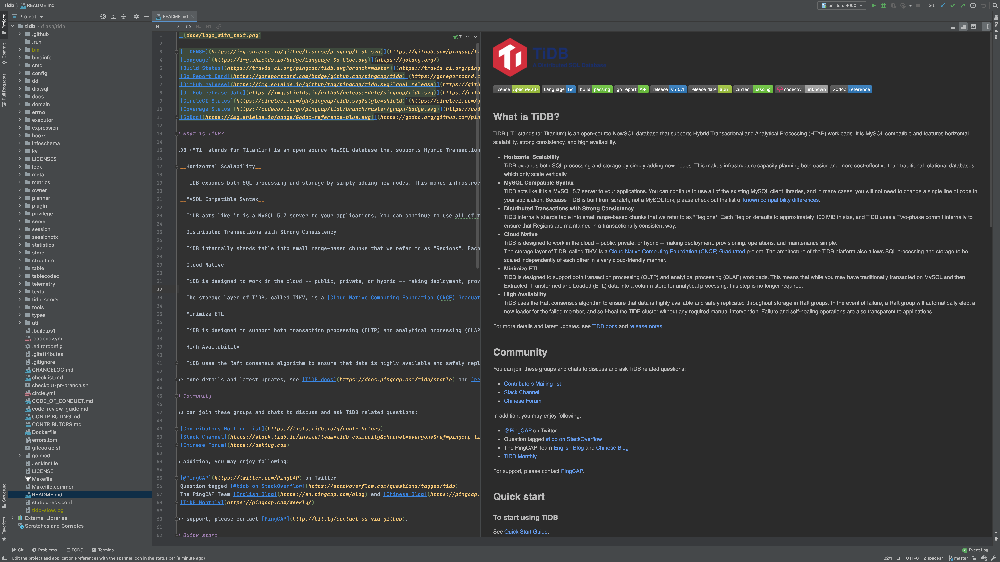
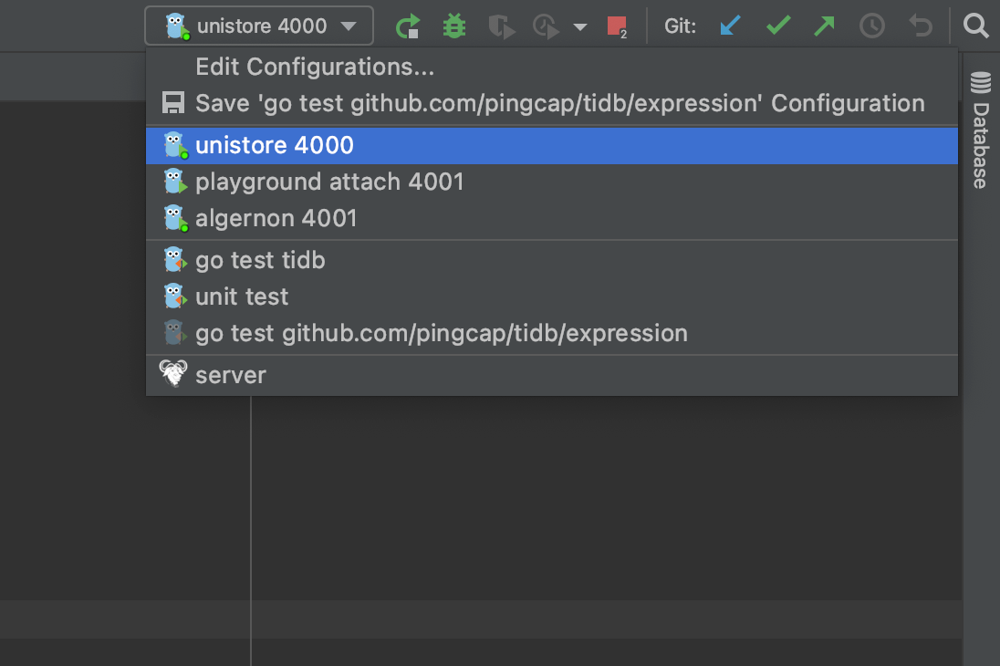
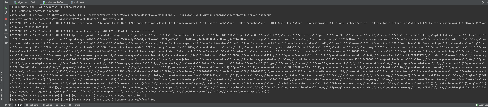
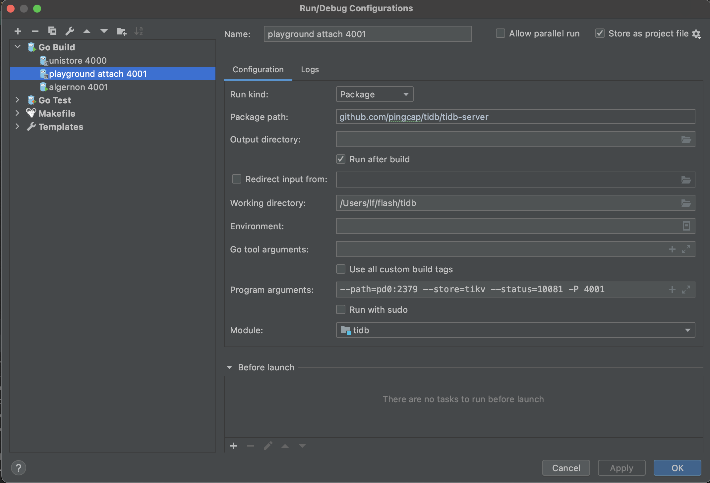
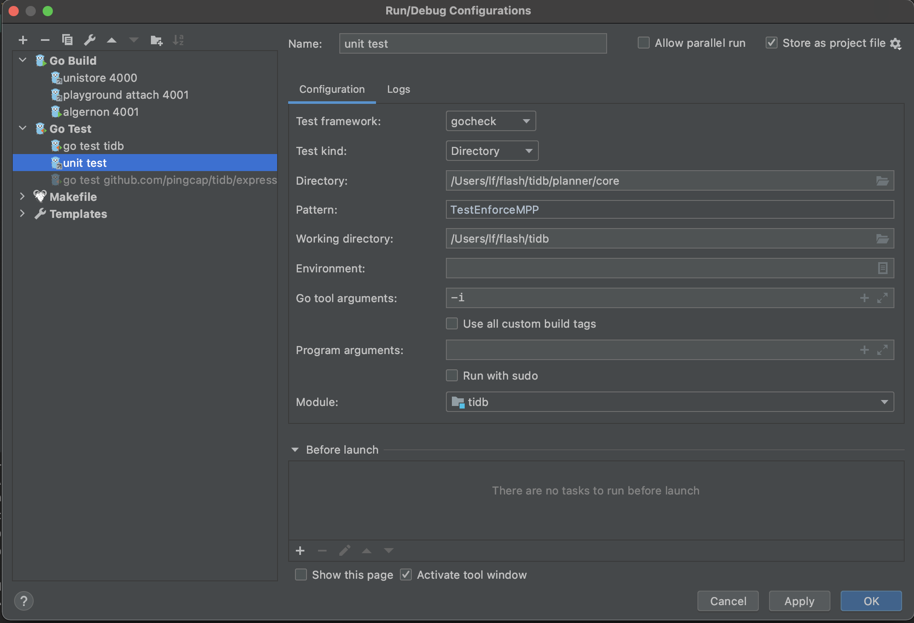
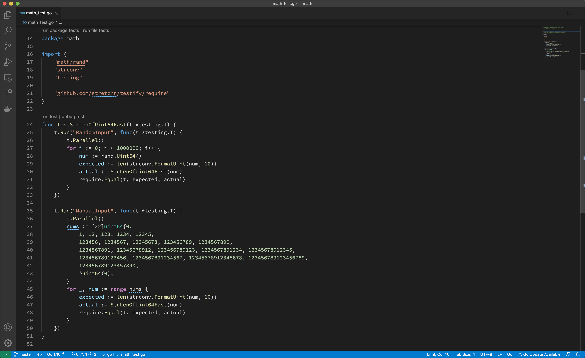
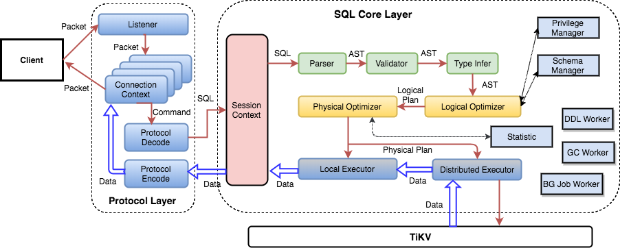

TiDB Development Guide

About this guide
- The target audience of this guide is TiDB contributors, both new and experienced.
- The objective of this guide is to help contributors become an expert of TiDB, who is familiar with its design and implementation and thus is able to use it fluently in the real world as well as develop TiDB itself deeply.
The structure of this guide
At present, the guide is composed of the following parts:
- Get started: Setting up the development environment, build and connect to the tidb-server, the subsections are based on an imagined newbie user journey.
- Contribute to TiDB helps you quickly get involved in the TiDB community, which illustrates what contributions you can make and how to quickly make one.
- Understand TiDB: helps you to be familiar with basic distributed database concepts, build a knowledge base in your mind, including but not limited to SQL language, key components, algorithms in a distributed database. The audiences who are already familiar with these concepts can skip this section.
- Project Management: helps you to participate in team working, lead feature development, manage projects in the TiDB community.
Contributors ✨
Thanks goes to these wonderful people (emoji key):


This project follows the all-contributors specification. Contributions of any kind welcome!
Get Started
Let's start your TiDB journey! There's a lot to learn, but every journey starts somewhere. In this chapter, we'll discuss:
- Install Golang
- Get the code, build and run
- Setup an IDE
- Write and run unit tests
- Debug and profile
- Commit code and submit a pull request
Install Golang
To build TiDB from source code, you need to install Go in your development environment first. If Go is not installed yet, you can follow the instructions in this document for installation.
Install Go 1.16
Currently, TiDB uses Go 1.16 to compile the code. To install Go 1.16, go to Go's download page, choose version 1.16, and then follow the installation instructions.
Manage the Go toolchain using gvm
If you are using Linux or MacOS, you can manage Go versions with Go Version Manager (gvm) easily.
To install gvm, run the following command:
curl -s -S -L https://raw.githubusercontent.com/moovweb/gvm/master/binscripts/gvm-installer | sh
Once you have gvm installed, you can use it to manage multiple different Go compilers with different versions. Let's install Go 1.16 and set it as default:
gvm install go1.16
gvm use go1.16 --default
Now, you can type go version in the shell to verify the installation:
go version
# OUTPUT:
# go version go1.16 linux/amd64
In the next chapter, you will learn how to obtain the TiDB source code and how to build it.
If you encounter any problems during your journey, do not hesitate to reach out on the TiDB Internals forum.
Get the code, build, and run
Prerequisites
git: The TiDB source code is hosted on GitHub as a git repository. To work with the git repository, please installgit.go: TiDB is a Go project. Therefore, you need a working Go environment to build it. See the previous Install Golang section to prepare the environment.mysqlclient (optional): After building TiDB from source, you can use the official MySQL client to connect to TiDB. It is not required if you want to build TiDB only.
Note:
TiDB could compile and run on Windows 10. However, it is not expected to be deployed on Windows, where you might encounter many compatibility problems. To have a better experience, we recommend you install WSL2 first.
Clone
Clone the source code to your development machine:
git clone https://github.com/pingcap/tidb.git
Build
Build TiDB from the source code:
cd tidb
make
Run
Now that you have the tidb-server binary under the bin directory, execute it for a TiDB server instance:
./bin/tidb-server
This starts the TiDB server listening on port 4000 with embedded unistore.
Connect
You can use the official MySQL client to connect to TiDB:
mysql -h 127.0.0.1 -P 4000 -u root -D test --prompt="tidb> " --comments
where
-h 127.0.0.1sets the Host to local host loopback interface-P 4000uses port 4000-u rootconnects as root user (-pnot given; the development build has no password for root.)-D testuses the Schema/Database test--prompt "tidb> "sets the prompt to distinguish it from a connection to MySQL--commentspreserves comments like/*T![clustered_index NONCLUSTERED */instead of stripping them when sending the query to the server.
If you encounter any problems during your journey, do not hesitate to reach out on the TiDB Internals forum.
Setup an IDE
Using an IDE is recommended as it makes it a lot easier to work with the TiDB code, for example to see the fields of a struct. However it is not required to use a specific IDE or editor. You can use the IDE or editor of your choice.
GoLand
You can use GoLand to easily run or debug TiDB in many situations.
Prerequisites
go: TiDB is a Go project. Therefore, you need a working Go environment to build it. See the previous Install Golang section to prepare the environment.- TiDB source code: See the previous Get the code, build and run section to get the source code.
Download GoLand
Download GoLand from here and install it.
Open the TiDB source code in GoLand
Follow the instructions and open the TiDB source code in GoLand.

Populate run configurations
Under the root directory of the TiDB source code, execute the following commands to add config files:
mkdir -p .idea/runConfigurations/ && cd .idea/runConfigurations/
cat <<EOF > unistore_4000.xml
<component name="ProjectRunConfigurationManager">
<configuration default="false" name="unistore 4000" type="GoApplicationRunConfiguration" factoryName="Go Application">
<module name="tidb" />
<working_directory value="\$PROJECT_DIR\$" />
<kind value="PACKAGE" />
<filePath value="\$PROJECT_DIR\$" />
<package value="github.com/pingcap/tidb/tidb-server" />
<directory value="\$PROJECT_DIR\$" />
<method v="2" />
</configuration>
</component>
EOF
cat <<EOF > playground_attach_4001.xml
<component name="ProjectRunConfigurationManager">
<configuration default="false" name="playground attach 4001" type="GoApplicationRunConfiguration" factoryName="Go Application">
<module name="tidb" />
<working_directory value="\$PROJECT_DIR\$" />
<parameters value="--path=127.0.0.1:2379 --store=tikv --status=10081 -P 4001 " />
<kind value="PACKAGE" />
<filePath value="\$PROJECT_DIR\$/tidb-server/main.go" />
<package value="github.com/pingcap/tidb/tidb-server" />
<directory value="\$PROJECT_DIR\$" />
<method v="2" />
</configuration>
</component>
EOF
cat <<EOF > unit_test.xml
<component name="ProjectRunConfigurationManager">
<configuration default="false" name="unit test" type="GoTestRunConfiguration" factoryName="Go Test">
<module name="tidb" />
<working_directory value="\$PROJECT_DIR\$" />
<go_parameters value="-i" />
<framework value="gocheck" />
<kind value="DIRECTORY" />
<package value="github.com/pingcap/tidb" />
<directory value="\$PROJECT_DIR\$/planner/core" />
<filePath value="\$PROJECT_DIR\$" />
<pattern value="TestEnforceMPP" />
<method v="2" />
</configuration>
</component>
EOF
Now, confirm there are three config files:
ls
# OUTPUT:
# playground_attach_4001.xml
# unistore_4000.xml
# unit_test.xml
Run or debug
Now you can see the run/debug configs right upper the window.

The first config is unistore 4000, which enables you to run/debug TiDB independently without TiKV, PD, and TiFlash.


The second config is playground attach 4001, which enables you to run/debug TiDB by attaching to an existing cluster; for example, a cluster deployed with tiup playground.
After the server process starts, you can connect to the origin TiDB by port 4000, or connect to your TiDB by port 4001 at the same time.


The third config is unit test, which enables you to run/debug unit tests. You may modify the Directory and Pattern to run other tests.


If you encounter any problems during your journey, do not hesitate to reach out on the TiDB Internals forum.
Visual Studio Code
VS Code is a generic IDE that has good extensions for working with Go and TiDB.

Prerequisites
go: TiDB is a Go project thus its building requires a workinggoenvironment. See the previous Install Golang section to prepare the environment.- TiDB source code: See the previous Get the code, build and run section to get the source code.
Download VS Code
Download VS Code from here and install it.
Now install these extensions:
Work with TiDB code in VS Code
Open the folder containing TiDB code via File→Open Folder. See the VS Code docs for how to edit and commit code.
There is detailed guide explaining how to use the TiDE extension.
Write and run unit tests
The TiDB project runs unit tests using testify.
You may find tests using pingcap/check which is a fork of go-check/check, but since that framework is poorly maintained, we are migrating to testify.
You can check the background and progress on the migration tracking issue.
How to write unit tests
We use testify to write unit tests. Basically, it is out-of-the-box testing with testify assertions.
TestMain
When you run tests, Golang compiles each package along with any files with names with suffix _test.go. Thus, a test binary contains tests in a package.
Golang testing provides a mechanism to support doing extra setup or teardown before or after testing by writing a package level unique function:
func TestMain(m *testing.M)
After all tests finish, we leverage the function to detect Goroutine leaks by goleak.
Before you write any unit tests in a package, create a file named main_test.go and setup the scaffolding:
func TestMain(m *testing.M) {
goleak.VerifyTestMain(m)
}
You can also put global variables or helper functions of the test binary in this file.
Assertion
Let's write a basic test for the utility function StrLenOfUint64Fast:
func TestStrLenOfUint64Fast(t *testing.T) {
for i := 0; i < 1000000; i++ {
num := rand.Uint64()
expected := len(strconv.FormatUint(num, 10))
actual := StrLenOfUint64Fast(num)
require.Equal(t, expected, actual)
}
}
Golang testing detects test functions from *_test.go files of the form:
func TestXxx(*testing.T)
where Xxx does not start with a lowercase letter. The function name identifies the test routine.
We follow this pattern but use testify assertions instead of out-of-the-box methods, like Error or Fail, since they are too low level to use.
We mostly use require.Xxx for assertions, which is imported from github.com/stretchr/testify/require. If the assertions fail, the test fails immediately, and we tend to fail tests fast.
Below are the most frequently used assertions:
func Equal(t TestingT, expected interface{}, actual interface{}, msgAndArgs ...interface{})
func EqualValues(t TestingT, expected interface{}, actual interface{}, msgAndArgs ...interface{})
func Len(t TestingT, object interface{}, length int, msgAndArgs ...interface{})
func Nil(t TestingT, object interface{}, msgAndArgs ...interface{})
func NoError(t TestingT, err error, msgAndArgs ...interface{})
func NotNil(t TestingT, object interface{}, msgAndArgs ...interface{})
func True(t TestingT, value bool, msgAndArgs ...interface{})
You can find other assertions follow the documentation.
Parallel
Golang testing provides a method of testing.T to run tests in parallel:
t.Parallel()
We leverage this function to run tests as parallel as possible, so that we make full use of the available resource.
When some tests should be run in serial, use Golang testing subtests and parallel the parent test only. In this way, tests in the same subtests set run in serial.
func TestParent(t *testing.T) {
t.Parallel()
// <setup code>
t.Run("Serial 0", func(t *testing.T) { ... })
t.Run("Serial 1", func(t *testing.T) { ... })
t.Run("Serial 2", func(t *testing.T) { ... })
// <tear-down code>
}
Generally, if a test modifies global configs or fail points, it should be run in serial.
When writing parallel tests, there are several common considerations.
In Golang, the loop iterator variable is a single variable that takes different value in each loop iteration. Thus, when you run this code it is highly possible to see the last element used for every iteration. You may use below paradigm to work around.
func TestParallelWithRange(t *testing.T) {
for _, test := range tests {
// copy iterator variable into a new variable, see issue #27779 in tidb repo
test := test
t.Run(test.Name, func(t *testing.T) {
t.Parallel()
...
})
}
}
Test kits
Most of our tests are much more complex than what we describe above. For example, to set up a test, we may create a mock storage, a mock session, or even a local database instance.
These functions are known as test kits. Some are used in one package so we implement them in place; others are quite common so we move it to the testkit directory.
When you write complex unit tests, you may take a look at what test kits we have now and try to leverage them. If we don’t have a test kit for your issue and your issue is considered common, add one.
How to run unit tests
Running all tests
You can always run all tests by executing the gotest target in Makefile:
make gotest
This is almost equivalent to go test ./... but it enables and disables fail points before and after running tests.
pingcap/failpoint is an implementation of failpoints for Golang. A fail point is used to add code points where you can inject errors. Fail point is a code snippet that is only executed when the corresponding fail point is active.
Running a single test
To run a single test, you can manually repeat what make gotest does and narrow the scope in one test or one package:
make failpoint-enable
cd domain
go test -v -run TestSchemaValidator # or with any other test flags
cd ..
make failpoint-disable
To display information on all the test flags, enter go help testflag.
If you develop with GoLand, you can also run a test from the IDE with manually enabled and disabled fail points. See the documentation for details.

As shown above, you can run tests of the whole package, of a test, or of a subtest, by click the corresponding gutter icon.
If you develop with VS Code, you can also run a test from the editor with manually enabled and disabled fail points. See the documentation for details.

As shown above, you can run tests of the whole package, of a test, or of a file.
Running tests for a pull request
Before you merge a pull request, it must pass all tests.
Generally, continuous integration (CI) runs the tests for you; however, if you want to run tests with conditions or rerun tests on failure, you should know how to do that.
/rebuild
Build the binary based on the PR for testing. It also reruns all the CI test cases.
/run-all-tests
Rerun all the CI test cases. This command accepts the following parameters:
tidb=<branch>|<pr/$num>specifies which tidb to use.tikv=<branch>|<pr/$num>specifies which tikv to use.pd=<branch>|<pr/$num>specifies which pd to use.tidb-test=<branch>|<pr/$num>specifies which tidb-test to use.tidb-private-test=<branch>|<pr/$num>specifies which tidb-private-test to use.
For example:
/run-all-tests tidb-test=pr/666
/run-all-tests tidb-test=release-2.1
/run-all-tests tikv=pr/999
/run-{{test}}
Run a single CI test. This command accepts the same parameters as /run-all-tests.
How to find failed tests
There are several common causes of failed tests.
Assertion failed
The most common cause of failed tests is that assertion failed. Its failure report looks like:
=== RUN TestTopology
info_test.go:72:
Error Trace: info_test.go:72
Error: Not equal:
expected: 1282967700000
actual : 1628585893
Test: TestTopology
--- FAIL: TestTopology (0.76s)
To find this type of failure, enter grep -i "FAIL" to search the report output.
Data race
Golang testing supports detecting data race by running tests with the -race flag. Its failure report looks like:
[2021-06-21T15:36:38.766Z] ==================
[2021-06-21T15:36:38.766Z] WARNING: DATA RACE
[2021-06-21T15:36:38.766Z] Read at 0x00c0055ce380 by goroutine 108:
...
[2021-06-21T15:36:38.766Z] Previous write at 0x00c0055ce380 by goroutine 169:
[2021-06-21T15:36:38.766Z] [failed to restore the stack]
Goroutine leak
We use goleak to detect goroutine leak for tests. Its failure report looks like:
goleak: Errors on successful test run: found unexpected goroutines:
[Goroutine 104 in state chan receive, with go.etcd.io/etcd/pkg/logutil.(*MergeLogger).outputLoop on top of the stack:
goroutine 104 [chan receive]:
go.etcd.io/etcd/pkg/logutil.(*MergeLogger).outputLoop(0xc000197398)
/go/pkg/mod/go.etcd.io/etcd@v0.5.0-alpha.5.0.20200824191128-ae9734ed278b/pkg/logutil/merge_logger.go:173 +0x3ac
created by go.etcd.io/etcd/pkg/logutil.NewMergeLogger
/go/pkg/mod/go.etcd.io/etcd@v0.5.0-alpha.5.0.20200824191128-ae9734ed278b/pkg/logutil/merge_logger.go:91 +0x85
To determine the source of package leaks, see the documentation
Timeout
After @tiancaiamao introduced the timeout checker for continuous integration, every test case should run in at most five seconds.
If a test case takes longer, its failure report looks like:
[2021-08-09T03:33:57.661Z] The following test cases take too long to finish:
[2021-08-09T03:33:57.661Z] PASS: tidb_test.go:874: tidbTestSerialSuite.TestTLS 7.388s
[2021-08-09T03:33:57.661Z] --- PASS: TestCluster (5.20s)
Debug and profile
In this section, you will learn:
- How to debug TiDB
- How to pause the execution at any line of code to inspect values and stacks
- How to profile TiDB to catch a performance bottleneck
Use delve for debugging
Delve is a debugger for the Go programming language. It provides a command-line debugging experience similar to the GNU Project debugger (GDB), but it is much more Go native than GDB itself.
Install delve
To install delve, see the installation guide. After the installation, depending on how you set your environment variables, you will have an executable file named dlv in either $GOPATH/bin or $HOME/go/bin. You can then run the following command to verify the installation:
$ dlv version
Delve Debugger
Version: 1.5.0
Build: $Id: ca5318932770ca063fc9885b4764c30bfaf8a199 $
Attach delve to a running TiDB process
Once you get the TiDB server running, you can attach the delve debugger.
For example, you can build and run a standalone TiDB server by running the following commands in the root directory of the source code:
make server
./bin/tidb-server
You can then start a new shell and use ps or pgrep to find the PID of the tidb server process you just started:
pgrep tidb-server
# OUTPUT:
# 1394942
If the output lists multiple PIDs, it indicates that you might have multiple TiDB servers running at the same time. To determine the PID of the tidb server you are planning to debug, you can use commands such as ps $PID, where $PID is the PID you are trying to know more about:
ps 1394942
# OUTPUT:
# PID TTY STAT TIME COMMAND
# 1394942 pts/11 SNl 0:02 ./bin/tidb-server
Once you get the PID, you can attach delve to it by running the following command:
dlv attach 1394942
You might get error messages of the kernel security setting as follows:
Could not attach to pid 1394942: this could be caused by a kernel security setting, try writing "0" to /proc/sys/kernel/yama/ptrace_scope
To resolve the error, follow the instructions provided in the error message and execute the following command as the root user to override the kernel security setting:
echo 0 > /proc/sys/kernel/yama/ptrace_scope
Then retry attaching delve onto the PID, and it should work.
If you've worked with GDB, the delve debugging interface will look familiar to you. It is an interactive dialogue that allows you to interact with the execution of the tidb server attached on. To learn more about delve, you can type help into the dialogue and read the help messages.
Use delve for debugging
After attaching delve to the running TiDB server process, you can now set breakpoints. TiDB server will pause execution at the breakpoints you specify.
To create a breakpoint, you can write:
break [name] <linespec>
where [name] is the name for the breakpoint, and <linespec> is the position of a line of code in the source code. Note the name is optional.
For example, the following command creates a breakpoint at the Next function of HashJoinExec. (The line number can be subject to change due to the modification of the source code).
dlv debug tidb-server/main.go
# OUTPUT:
# Type 'help' for list of commands.
# (dlv) break executor/join.go:653
# Breakpoint 1 (enabled) set at 0x36752d8 for github.com/pingcap/tidb/executor.(*HashJoinExec).Next() ./executor/join.go:653
# (dlv)
Once the execution is paused, the context of the execution is fully preserved. You are free to inspect the values of different variables, print the calling stack, and even jump between different goroutines. Once you finish the inspection, you can resume the execution by stepping into the next line of code or continue the execution until the next breakpoint is encountered.
Typically, when you use a debugger, you need to take the following steps:
- Locate the code and set a breakpoint.
- Prepare data so that the execution will get through the breakpoint, and pause at the specified breakpoint as expected.
- Inspect values and follow the execution step by step.
Using delve to debug a test case
If a test case fails, you can also use delve to debug it. Get the name of the test case, go to the corresponding package directory, and then run the following command to start a debugging session that will stop at the entry of the test:
dlv test -- -run TestName
Understand how TiDB works through debugging
Besides debugging problems, you can also use the debugger to understand how TiDB works through tracking the execution step by step.
To understand TiDB internals, it's critical that you understand certain functions. To better understand how TiDB works, you can pause the execution of these TiDB functions, and then run TiDB step by step.
For example:
executor/compiler.go:Compileis where each SQL statement is compiled and optimized.planner/planner.go:Optimizeis where the SQL optimization starts.executor/adapter.go:ExecStmt.Execis where the SQL plan turns into executor and where the SQL execution starts.- Each executor's
Open,Next, andClosefunction marks the volcano-style execution logic.
When you are reading the TiDB source code, you are strongly encouraged to set a breakpoint and use the debugger to trace the execution whenever you are confused or uncertain about the code.
Using pprof for profiling
For any database system, performance is always important. If you want to know where the performance bottleneck is, you can use a powerful Go profiling tool called pprof.
Gather runtime profiling information through HTTP end points
Usually, when TiDB server is running, it exposes a profiling end point through HTTP at http://127.0.0.1:10080/debug/pprof/profile. You can get the profile result by running the following commands:
curl -G "127.0.0.1:10080/debug/pprof/profile?seconds=45" > profile.profile
go tool pprof -http 127.0.0.1:4001 profile.profile
The commands capture the profiling information for 45 seconds, and then provide a web view of the profiling result at 127.0.0.1:4001. This view contains a flame graph of the execution and more views that can help you diagnose the performance bottleneck.
You can also gather other runtime information through this end point. For example:
- Goroutine:
curl -G "127.0.0.1:10080/debug/pprof/goroutine" > goroutine.profile
- Trace:
curl -G "127.0.0.1:10080/debug/pprof/trace?seconds=3" > trace.profile
go tool trace -http 127.0.0.1:4001 trace.profile
- Heap:
curl -G "127.0.0.1:10080/debug/pprof/heap" > heap.profile
go tool pprof -http 127.0.0.1:4001 heap.profile
To learn how the runtime information is analyzed, see Go's diagnostics document.
Profiling during benchmarking
When you are proposing a performance-related feature for TiDB, we recommend that you also include a benchmark result as proof of the performance gain or to show that your code won't introduce any performance regression. In this case, you need to write your own benchmark test like in executor/benchmark.go.
For example, if you want to benchmark the window functions, because BenchmarkWindow are already in the benchmark tests, you can run the following commands to get the benchmark result:
cd executor
go test -bench BenchmarkWindow -run BenchmarkWindow -benchmem
If you find any performance regression, and you want to know the cause of it, you could use a command like the following:
go test -bench BenchmarkWindow -run BenchmarkWindow -benchmem -memprofile memprofile.out -cpuprofile profile.out
Then, you can use the steps described above to generate and analyze the profiling information.
Commit the code and submit a pull request
The TiDB project uses Git to manage its source code. To contribute to the project, you need to get familiar with Git features so that your changes can be incorporated into the codebase.
This section addresses some of the most common questions and problems that new contributors might face. This section also covers some Git basics; however if you find that the content is a little difficult to understand, we recommend that you first read the following introductions to Git:
- The "Beginner" and "Getting Started" sections of this tutorial from Atlassian
- Documentation and guides for beginners from Github
- A more in-depth book from Git
Prerequisites
Before you create a pull request, make sure that you've installed Git, forked pingcap/tidb, and cloned the upstream repo to your PC. The following instructions use the command line interface to interact with Git; there are also several GUIs and IDE integrations that can interact with Git too.
If you've cloned the upstream repo, you can reference it using origin in your local repo. Next, you need to set up a remote for the repo your forked using the following command:
git remote add dev https://github.com/your_github_id/tidb.git
You can check the remote setting using the following command:
git remote -v
# dev https://github.com/username/tidb.git (fetch)
# dev https://github.com/username/tidb.git (push)
# origin https://github.com/pingcap/tidb.git (fetch)
# origin https://github.com/pingcap/tidb.git (push)
Standard Process
The following is a normal procedure that you're likely to use for the most common minor changes and PRs:
-
Ensure that you're making your changes on top of master and get the latest changes:
git checkout master git pull master -
Create a new branch for your changes:
git checkout -b my-changes -
Make some changes to the repo and test them.
-
Commit your changes and push them to your
devremote repository:# stage files you created/changed/deleted git add path/to/changed/file.go path/to/another/changed/file.go # commit changes staged, make sure the commit message is meaningful and readable git commit -s -m "pkg, pkg2, pkg3: what's changed" # optionally use `git status` to check if the change set is correct # git status # push the change to your `dev` remote repository git push --set-upstream dev my-changes -
Make a PR from your fork to the master branch of pingcap/tidb. For more information on how to make a PR, see Making a Pull Request in GitHub Guides.
When making a PR, look at the PR template and follow the commit message format, PR title format, and checklists.
After you create a PR, if your reviewer requests code changes, the procedure for making those changes is similar to that of making a PR, with some steps skipped:
-
Switch to the branch that is the head and get the latest changes:
git checkout my-changes git pull -
Make, stage, and commit your additional changes just like before.
-
Push those changes to your fork:
git push
If your reviewer requests for changes with GitHub suggestion, you can commit the suggestion from the webpage. GitHub provides documentation for this case.
Conflicts
When you edit your code locally, you are making changes to the version of pingcap/tidb that existed when you created your feature branch. As such, when you submit your PR it is possible that some of the changes that have been made to pingcap/tidb since then conflict with the changes you've made.
When this happens, you need to resolve the conflicts before your changes can be merged. First, get a local copy of the conflicting changes: checkout your local master branch with git checkout master, then git pull master to update it with the most recent changes.
Rebasing
You're now ready to start the rebasing process. Checkout the branch with your changes and execute git rebase master.
When you rebase a branch on master, all the changes on your branch are reapplied to the most recent version of master. In other words, Git tries to pretend that the changes you made to the old version of master were instead made to the new version of master. During this process, you should expect to encounter at least one "rebase conflict." This happens when Git's attempt to reapply the changes fails because your changes conflict with other changes that have been made. You can tell that this happened because you'll see lines in the output that look like:
CONFLICT (content): Merge conflict in file.go
When you open these files, you'll see sections of the form
<<<<<<< HEAD
Original code
=======
Your code
>>>>>>> 8fbf656... Commit fixes 12345
This represents the lines in the file that Git could not figure out how to rebase. The section between <<<<<<< HEAD and ======= has the code from master, while the other side has your version of the code. You'll need to decide how to deal with the conflict. You may want to keep your changes, keep the changes on master, or combine the two.
Generally, resolving the conflict consists of two steps: First, fix the particular conflict. Edit the file to make the changes you want and remove the <<<<<<<, =======, and >>>>>>> lines in the process. Second, check the surrounding code. If there was a conflict, it's likely there are some logical errors lying around too!
Once you're all done fixing the conflicts, you need to stage the files that had conflicts in them via git add. Afterwards, run git rebase --continue to let Git know that you've resolved the conflicts and it should finish the rebase.
Once the rebase has succeeded, you'll want to update the associated branch on your fork with git push --force-with-lease.
Advanced rebasing
If your branch contains multiple consecutive rewrites of the same code, or if the rebase conflicts are extremely severe, you can use git rebase --interactive master to gain more control over the process. This allows you to choose to skip commits, edit the commits that you do not skip, change the order in which they are applied, or "squash" them into each other.
Alternatively, you can sacrifice the commit history like this:
# squash all the changes into one commit so you only have to worry about conflicts once
git rebase -i $(git merge-base master HEAD) # and squash all changes along the way
git rebase master
# fix all merge conflicts
git rebase --continue
Squashing commits into each other causes them to be merged into a single commit. Both the upside and downside of this is that it simplifies the history. On the one hand, you lose track of the steps in which changes were made, but the history becomes easier to work with.
You also may want to squash together just the last few commits, possibly because they only represent "fixups" and not real changes. For example, git rebase --interactive HEAD~2 allows you to edit the two commits only.
Contribute to TiDB
TiDB is developed by an open and friendly community. Everybody is cordially welcome to join the community and contribute to TiDB. We value all forms of contributions, including, but not limited to:
- Code reviewing of the existing patches
- Documentation and usage examples
- Community participation in forums and issues
- Code readability and developer guide
- We welcome contributions that add code comments and code refactor to improve readability
- We also welcome contributions to docs to explain the design choices of the internal
- Test cases to make the codebase more robust
- Tutorials, blog posts, talks that promote the project
Here are guidelines for contributing to various aspect of the project:
- Community Guideline
- Committer Guide
- Report an Issue
- Contribute Code
- Review a Pull Request
- Make a Proposal
- Code Style and Quality Guide
- Write Document
- Miscellaneous Topics
Any other question? Reach out to the TiDB Internals forum to get help!
Community Guideline
TiDB community aims to provide harassment-free, welcome and friendly experience for everyone. The first and most important thing for any participant in the community is be friendly and respectful to others. Improper behaviors will be warned and punished.
We appreciate any contribution in any form to TiDB community. Thanks so much for your interest and enthusiasm on TiDB!
Code of Conduct
TiDB community refuses any kind of harmful behavior to the community or community members. Everyone should read our Code of Conduct and keep proper behavior while participating in the community.
Governance
TiDB development governs by two kind of groups:
- TOC: TOC serves as the main bridge and channel for coordinating and information sharing across companies and organizations. It is the coordination center for solving problems in terms of resource mobilization, technical research and development direction in the current community and cooperative projects.
- teams: Teams are persistent open groups that focus on a part of the TiDB projects. A team has its reviewer, committer and maintainer, and owns one or more repositories. Team level decision making comes from its maintainers.
A typical promoted path for a TiDB developer is from user to reviewer, then committer and maintainer, finally maybe a TOC member. But gaining more roles doesn't mean you have any privilege over other community members or even any right to control them. Everyone in TiDB community are equal and share the responsibility to collaborate constructively with other contributors, building a friendly community. The roles are a natural reward for your substantial contribution in TiDB development and provide you more rights in the development workflow to enhance your efficiency. Meanwhile, they request some additional responsibilities from you:
- Now that you are a member of team reviewers/committers/maintainers, you are representing the project and your fellow team members whenever you discuss TiDB with anyone. So please be a good person to defend the reputation of the team.
- Committers/maintainers have the right to merge pull requests, so bear the additional responsibility of handling the consequences of accepting a change into the codebase or documentation. That includes reverting or fixing it if it causes problems as well as helping out the release manager in resolving any problems found during the pre-release testing cycle. While all contributors are free to help out with this part of the process, and it is most welcome when they do, the actual responsibility rests with the committers/maintainers that merged the change.
- Reviewers/committers/maintainers also bear the primary responsibility for guiding contributors the right working procedure, like deciding when changes proposed on the issue tracker should be escalated to internal.tidb.io for wider discussion, as well as suggesting the use of the TiDB Design Documents process to manage the design and justification of complex changes, or changes with a potentially significant impact on end users.
There should be no blockers to contribute with no roles. It's totally fine for you to reject the promotion offer if you don't want to take the additional responsibilities or for any other reason. Besides, except for code or documentation contribution, any kind of contribution for the community is highly appreciated. Let's grow TiDB ecosystem through our contributions of this community.
Committer Guide
This is an evolving document to provide some helpful tips for committers. Most of them are lessons learned during development. We welcome every committer to contribute to this document. See the TiDB Community Guideline for an overview of the committership and the general development process.
Community First
The collective effort of the community moves the project forward and makes the project awesome for everyone. When we make a decision, it is always helpful to keep the community in mind. Here are some example questions that we can ask:
- How can I encourage new contributors to get more involved in the project?
- Can I help to save my fellow committers' time?
- Have I enabled the rest of the community to participate the design proposals?
Public Archive Principle
While private channels such as face to face discussion are useful for development, they also create barriers for the broader community's participation. An open way of development suggests all decisions to be made in public channels, which are archived and accessible to everyone. As a result, any contributor can keep up with the development by watching the archives and join the development anytime.
While this principle applies to every contributor, it is especially important for committers. Here are some example applications of this principle:
- When getting a project-related question from a personal channel, encourage the person to open a public thread in the TiDB Internals forum, so others in the community can benefit from the answer.
- After an in-person discussion, send a summary to public channels (as an RFC or a discuss topic).
Shepherd a Pull Request
Here are some tips to shepherd a pull request. You can also take a look at Review a Pull Request.
- Assign the PR to yourself, so that other committers know that the PR has already been tended to.
- Make use of the status label to indicate the current status.
- Check if a design document needs to be present.
- If the contributor has not requested a reviewer, kindly ask the contributor to do so. If the PR comes from a new contributor, help the contributor to request reviewers and ask the contributor to do so next time.
- Moderate the reviews, ask reviewers to approve explicitly.
- Mark the PR as accepted and acknowledge the contributor/reviewers.
- Merge the PR :)
Time Management
There are many things that a committer can do, such as moderating discussions, pull request reviews and code contributions.
Working on an open source project can be rewarding, but also be a bit overwhelming sometimes. A little bit of time management might be helpful to alleviate the problem. For example, some committers have a "community day" in a week when they actively manage outstanding PRs, but watch the community less frequently in the rest of the time.
Remember that your merit will never go away, so please take your time and pace when contributing to the project:)
Report an Issue
If you think you have found an issue in TiDB, you can report it to the issue tracker. If you would to like to report issues to TiDB documents or this development guide, they are in separate GitHub repositories, so you need to file issues to corresponding issue tracker, TiDB document issue tracker and TiDB Development Guide issue tracker. Read Write Document for more details.
Checking if an issue already exists
The first step before filing an issue report is to see whether the problem has already been reported. You can use the search bar to search existing issues. This doesn't always work, and sometimes it's hard to know what to search for, so consider this extra credit. We won't mind if you accidentally file a duplicate report. Don't blame yourself if your issue is closed as duplicated. We highly recommend if you are not sure about anything of your issue report, you can turn to internal.tidb.io for a wider audience and ask for discussion or help.
Filing an issue
If the problem you're reporting is not already in the issue tracker, you can open a GitHub issue with your GitHub account. TiDB uses issue template for different kinds of issues. Issue templates are a bundle of questions to collect necessary information about the problem to make it easy for other contributors to participate. For example, a bug report issue template consists of four questions:
- Minimal reproduce step.
- What did you expect to see?
- What did you see instead?
- What is your TiDB version?
Answering these questions give the details about your problem so other contributors or TiDB users could pick up your issue more easily.
As previous section shows, duplicated issues should be reduced. To help others who encountered the problem find your issue, except for problem details answered in the issue template, a descriptive title which contains information that might be unique to it also helps. This can be the components your issue belongs to or database features used in your issue, the conditions that trigger the bug, or part of the error message if there is any.
Making good issues
Except for a good title and detailed issue message, you can also add suitable labels to your issue via /label, especially which component the issue belongs to. Many committers and contributors only focus on certain subsystems of TiDB. Setting the appropriate component is important for getting their attention.
If you are able to, you should take more considerations on your issue:
- Does the feature fit well into TiDB's architecture? Will it scale and keep TiDB flexible for the future, or will the feature restrict TiDB in the future?
- Is the feature a significant new addition (rather than an improvement to an existing part)? If yes, will the community commit to maintaining this feature?
- Does this feature align well with currently ongoing efforts?
- Does the feature produce additional value for TiDB users or developers? Or does it introduce the risk of regression without adding relevant user or developer benefit?
Deep thoughts could help the issue proceed faster and help build your own reputation in the community.
Understanding the issue's progress and status
Once your issue is created, other contributors might take part in. You need to discuss with them, provide more information they might want to know, address their comments to reach consensus and make the progress proceeds. But please realize there are always more pending issues than contributors are able to handle, and especially TiDB community is a global one, contributors reside all over the world and they might already be very busy with their own work and life. Please be patient! If your issue gets stale for some time, it's okay to ping other participants, or take it to internal.tidb.io for more attention.
Disagreement with a resolution on the issue tracker
As humans, we will have differences of opinions from time to time. First and foremost, please be respectful that care, thought, and volunteer time went into the resolution.
With this in mind, take some time to consider any comments made in association with the resolution of the issue. On reflection, the resolution steps may seem more reasonable than you initially thought.
If you still feel the resolution is incorrect, then raise a thoughtful question on internal.tidb.io. Further argument and disrespectful discourse on internal.tidb.io after a consensus has been reached amongst the committers is unlikely to win any converts.
Reporting security vulnerabilities
Security issues are not suitable to report in public early, so different tracker strategy is used. Please refer to the dedicated process.
Contribute Code
TiDB is maintained, improved, and extended by code contributions. We welcome code contributions to TiDB. TiDB uses a workflow based on pull requests.
Before contributing
Contributing to TiDB does not start with opening a pull request. We expect contributors to reach out to us first to discuss the overall approach together. Without consensus with the TiDB committers, contributions might require substantial rework or will not be reviewed. So please create a GitHub issue, discuss under an existing issue, or create a topic on the internal.tidb.io and reach consensus.
For newcomers, you can check the starter issues, which are annotated with a "good first issue" label. These are issues suitable for new contributors to work with and won't take long to fix. But because the label is typically added at triage time it can turn out to be inaccurate, so do feel free to leave a comment if you think the classification no longer applies.
To get your change merged you need to sign the CLA to grant PingCAP ownership of your code.
Contributing process
After a consensus is reached in issues, it's time to start the code contributing process:
- Assign the issue to yourself via /assign. This lets other contributors know you are working on the issue so they won't make duplicate efforts.
- Follow the GitHub workflow, commit code changes in your own git repository branch and open a pull request for code review.
- Make sure the continuous integration checks on your pull request are green (i.e. successful).
- Review and address comments on your pull request. If your pull request becomes outdated with the target branch, you need to rebase your pull request to keep it up to date. Since TiDB uses squash and merge, simply merging master to catch up the change is also acceptable.
- When your pull request gets enough approvals (the default number is 2) and all other requirements are met, it will be merged.
- Handle regressions introduced by your change. Although committers bear the main responsibility to fix regressions, it's quite nice for you to handle it (reverting the change or sending fixes).
Clear and kind communication is key to this process.
Writing tests
One important thing when you make code contributions to TiDB is tests. Tests should be always considered as a part of your change. Any code changes that cause semantic changes or new function additions to TiDB should have corresponding test cases. And of course you can not break any existing test cases if they are still valid. It's recommended to run tests on your local environment first to find obvious problems and fix them before opening the pull request.
It's also highly appreciated if your pull request only contains test cases to increase test coverage of TiDB. Supplement test cases for existing modules is a good and easy way to become acquainted with existing code.
Making good pull requests
When creating a pull request for submission, there are several things that you should consider to help ensure that your pull request is accepted:
- Does the contribution alter the behavior of features or components in a way that it may break previous users' programs and setups? If yes, there needs to be a discussion and agreement that this change is desirable.
- Does the contribution conceptually fit well into TiDB? Is it too much of a special case such that it makes things more complicated for the common case, or bloats the abstractions/APIs?
- Does the contribution make a big impact on TiDB's build time?
- Does your contribution affect any documentation? If yes, you should add/change proper documentation.
- If there are any new dependencies, are they under active maintenances? What are their licenses?
Making good commits
Each feature or bugfix should be addressed by a single pull request, and for each pull request there may be several commits. In particular:
- Do not fix more than one issues in the same commit (except, of course, if one code change fixes all of them).
- Do not do cosmetic changes to unrelated code in the same commit as some feature/bugfix.
Waiting for review
To begin with, please be patient! There are many more people submitting pull requests than there are people capable of reviewing your pull request. Getting your pull request reviewed requires a reviewer to have the spare time and motivation to look at your pull request. If your pull request has not received any notice from reviewers (i.e., no comment made) for some time, you can ping the reviewers and assignees, or take it to internal.tidb.io for more attention.
When someone does manage to find the time to look at your pull request, they will most likely make comments about how it can be improved (don't worry, even committers/maintainers have their pull requests sent back to them for changes). It is then expected that you update your pull request to address these comments, and the review process will thus iterate until a satisfactory solution has emerged.
Review a Pull Request
TiDB values any code review. One of the bottlenecks in the TiDB development process is the lack of code reviews. If you browse the issue tracker, you will see that numerous issues have a fix, but cannot be merged into the main source code repository, because no one has reviewed the proposed solution. Reviewing a pull request can be just as informative as providing a pull request and it will allow you to give constructive comments on another developer's work. It is a common misconception that in order to be useful, a code review has to be perfect. This is not the case at all! It is helpful to just test the pull request and/or play around with the code and leave comments in the pull request.
Principles of the code review
- Technical facts and data overrule opinions and personal preferences.
- Software design is about trade-offs, and there is no silver bullet.
Everyone comes from different technical backgrounds with different knowledge. They have their own personal preferences. It is important that the code review is not based on biased opinions.
Sometimes, making choices of accepting or rejecting a pull request can be tricky as in the following situations:
- Suppose that a pull request contains special optimization that can improve the overall performance by 30%. However, the pull request introduces a totally different code path, and every subsequent feature must consider it.
- Suppose that a pull request is to fix a critical bug, but the change in the pull request is risky to introduce other bugs.
If a pull request under your review is in these tricky situations, what is the right choice, accepting the pull request or rejecting it? The answer is always "it depends." Software design is more like a kind of art than technology. It is about aesthetics and your taste of the code. There are always trade-offs, and often there's no perfect solution.
Triaging pull requests
Some pull request authors may not be familiar with TiDB, TiDB development workflow or TiDB community. They don't know what labels should be added to the pull requests and which experts could be asked for review. If you are able to, it would be great for you to triage the pull requests, adding suitable labels to the pull requests, asking corresponding experts to review the pull requests. These actions could help more contributors notice the pull requests and make quick responses.
Checking pull requests
There are some basic aspects to check when you review a pull request:
- Concentration. One pull request should only do one thing. No matter how small it is, the change does exactly one thing and gets it right. Don't mix other changes into it.
- Tests. A pull request should be test covered, whether the tests are unit tests, integration tests, or end-to-end tests. Tests should be sufficient, correct and don't slow down the CI pipeline largely.
- Functionality. The pull request should implement what the author intends to do and fit well in the existing code base, resolve a real problem for TiDB users. To get the author's intention and the pull request design, you could follow the discussions in the corresponding GitHub issue or internal.tidb.io topic.
- Style. Code in the pull request should follow common programming style. For Go and Rust, there are built-in tools with the compiler toolchain. However, sometimes the existing code is inconsistent with the style guide, you should maintain consistency with the existing code or file a new issue to fix the existing code style first.
- Documentation. If a pull request changes how users build, test, interact with, or release code, you must check whether it also updates the related documentation such as READMEs and any generated reference docs. Similarly, if a pull request deletes or deprecates code, you must check whether or not the corresponding documentation should also be deleted.
- Performance. If you find the pull request may affect performance, you could ask the author to provide a benchmark result.
Writing code review comments
When you review a pull request, there are several rules and suggestions you should take to write better comments:
- Be respectful to pull request authors and other reviewers. Code review is a part of your community activities. You should follow the community requirements.
- Asking questions instead of making statements. The wording of the review comments is very important. To provide review comments that are constructive rather than critical, you can try asking questions rather than making statements.
- Offer sincere praise. Good reviewers focus not only on what is wrong with the code but also on good practices in the code. As a reviewer, you are recommended to offer your encouragement and appreciation to the authors for their good practices in the code. In terms of mentoring, telling the authors what they did is right is even more valuable than telling them what they did is wrong.
- Provide additional details and context of your review process. Instead of simply "approving" the pull request. If your test the pull request, report the result and your test environment details. If you request changes, try to suggest how.
Accepting pull requests
Once you think the pull request is ready, you can approve it.
In the TiDB community, most repositories require two approvals before a pull request can be accepted. A few repositories require a different number of approvals, but two approvals are the default setting. After the required approval number is met, a committer can /merge the pull request.
Make a Proposal
This page defines the best practices procedure for making a proposal in TiDB projects. This text is based on the content of TiDB Design Document.
Motivation
Many changes, including bug fixes and documentation improvements can be implemented and reviewed via the normal GitHub pull request workflow.
Some changes though are "substantial", and we ask that these be put through a bit of a design process and produce a consensus among the TiDB community.
The process described in this page is intended to provide a consistent and controlled path for new features to enter the TiDB projects, so that all stakeholders can be confident about the direction the projects is evolving in.
Who should initiate the design document?
Everyone is encouraged to initiate a design document, but before doing it, please make sure you have an intention of getting the work done to implement it.
Before creating a design document
A hastily-proposed design document can hurt its chances of acceptance. Low-quality proposals, proposals for previously-rejected features, or those that don't fit into the near-term roadmap, may be quickly rejected, which can be demotivating for the unprepared contributor. Laying some groundwork ahead of the design document can make the process smoother.
Although there is no single way to prepare for submitting a design document, it is generally a good idea to pursue feedback from other project developers beforehand, to ascertain that the design document may be desirable; having a consistent impact on the project requires concerted effort toward consensus-building.
The most common preparations for writing and submitting a draft of design document is on the TiDB Internals forum.
What is the process?
- Create a pull request with a design document based on the template as
YYYY-MM-DD-my-feature.md. - Discussion takes place, and the text is revised in response.
- The design document is accepted or rejected when at least two committers reach consensus and no objection from the committer.
- If accepted, create a tracking issue for the design document or convert one from a previous discuss issue. The tracking issue basically tracks subtasks and progress. And refer the tracking issue in the design document replacing placeholder in the template.
- Merge the pull request of design.
Please refer to the tracking issue from subtasks to track the progress.
An example that almost fits into this model is the proposal "Support global index for partition table", without following the latest template.
TiDB Code Style and Quality Guide
This is an attempt to capture the code and quality standard that we want to maintain.
The newtype pattern improves code quality
We can create a new type using the type keyword.
The newtype pattern is perhaps most often used in Golang to get around type restrictions rather than to try to create new ones. It is used to create different interface implementations for a type or to extend a builtin type or a type from an existing package with new methods.
However, it is generally useful to improve code clarity by marking that data has gone through either a validation or a transformation. Using a different type can reduce error handling and prevent improper usage.
package main
import (
"fmt"
"strings"
)
type Email string
func newEmail(email string) (Email, error) {
if !strings.Contains(email, "@") {
return Email(""), fmt.Errorf("Expected @ in the email")
}
return Email(email), nil
}
func (email Email) Domain() string {
return strings.Split(string(email), "@")[1]
}
func main() {
ping, err := newEmail("go@pingcap.com")
if err != nil { panic(err) }
fmt.Println(ping.Domain())
}
When to use value or pointer receiver
Because pointer receivers need to be used some of the time, Go programmers often use them all of the time. This is a typical outline of Go code:
type struct S {}
func NewStruct() *S
func (s *S) structMethod()
Using pointers for the entire method set means we have to read the source code of every function to determine if it mutates the struct. Mutations are a source of error. This is particularly true in concurrent programs. We can contrast this with values: these are always concurrent safe.
For code clarity and bug reduction a best practice is to default to using values and value receivers. However, pointer receivers are often required to satisfy an interface or for performance reasons, and this need overrides any default practice.
However, performance can favor either approach. One might assume that pointers would always perform better because it avoids copying. However, the performance is roughly the same for small structs in micro benchmark. This is because the copying is cheap, inlining can often avoid copying anyways, and pointer indirection has its own small cost. In a larger program with a goal of predictable low latency the value approach can be more favorable because it avoids heap allocation and any additional GC overhead.
As a rule of thumb is that when a struct has 10 or more words we should use pointer receivers. However, to actually know which is best for performance depends on how the struct is used in the program and must ultimately be determined by profiling. For example these are some factors that affect things:
- method size: small inlineable methods favor value receivers.
- Is the struct called repeatedly in a for loop? This favors pointer receivers.
- What is the GC behavior of the rest of the program? GC pressure may favor value receivers.
Parallel For-Loop
There are two types of for loop on range: "with index" and "without index". Let's see an example for range with index.
func TestRangeWithIndex(t *testing.T) {
rows := []struct{ index int }{{index: 0}, {index: 1}, {index: 2}}
for _, row := range rows {
row.index += 10
}
for i, row := range rows {
require.Equal(t, i+10, row.index)
}
}
the output is:
Error Trace: version_test.go:39
Error: Not equal:
expected: 10
actual : 0
Test: TestShowRangeWithIndex
Test fails because when range with index, the loop iterator variable is the same instance of the variable with a clone of iteration target value.
The same instance of the variable
Since the the loop iterator variable is the same instance of the variable, it may result in tricky error with parallel for-loop.
done := make(chan bool)
values := []string{"a", "b", "c"}
for _, v := range values {
go func() {
fmt.Println(v)
done <- true
}()
}
for _ = range values {
<-done
}
You might expect to see a, b, c as the output, but you'll probably see instead is c, c, c.
This is because each iteration of the loop uses the same instance of the variable v, so each closure shares that single variable.
This is the same reason which result wrong test when use t.Parallel() with range, which is covered in Parallel section of Write and run unit tests
A clone of iteration target value
Since the loop iterator variable is a clone of iteration target value, it may result in logic error. It can also lead to performance issue compared with none-index range loop or bare for loop.
type Item struct {
id int
value [1024]byte
}
func BenchmarkRangeIndexStruct(b *testing.B) {
var items [1024]Item
for i := 0; i < b.N; i++ {
var tmp int
for k := range items {
tmp = items[k].id
}
_ = tmp
}
}
func BenchmarkRangeStruct(b *testing.B) {
var items [1024]Item
for i := 0; i < b.N; i++ {
var tmp int
for _, item := range items {
tmp = item.id
}
_ = tmp
}
}
BenchmarkRangeIndexStruct-12 4875518 246.0 ns/op
BenchmarkRangeStruct-12 16171 77523 ns/op
You can see range with index is much slower than range without index, since range with index use cloned value so have big performance decrease if cloned value use lots of memory.
Write Document
Good documentation is crucial for any kind of software. This is especially true for sophisticated software systems such as distributed database like TiDB. The TiDB community aims to provide concise, precise, and complete documentation and welcomes any contribution to improve TiDB's documentation.
Where you can contribute
The TiDB community provides bilingual documentation. The English documentation is maintained in the pingcap/docs repository (docs repo) and the Chinese documentation is maintained in the pingcap/docs-cn repository (docs-cn repo). You are welcome to contribute to either of the repositories.
In a addition, you are also welcome to contribute to the TiDB Operator documentation and the TiDB Data Migration documentation.
This guide walks you through what and how you can contribute to the TiDB bilingual documentation in docs-cn and docs repos.
What you can contribute
You can start from any one of the following items to help improve TiDB Docs at the PingCAP website (en and zh):
- Fix typos or format (punctuation, space, indentation, code block, etc.)
- Fix or update inappropriate or outdated descriptions
- Add missing content (sentence, paragraph, or a new document)
- Translate docs changes from English to Chinese, or from Chinese to English. See How we implement bilingual documentation
- Submit, reply to, and resolve docs issues or docs-cn issues
- (Advanced) Review Pull Requests created by others
Before you contribute
Before you contribute, let's take a quick look at some general information about TiDB documentation maintenance. This can help you to become a contributor soon.
Get familiar with style
-
Diagram Style: Figma Quick Start Guide
To keep a consistent style for diagrams, we recommend using Figma to draw or design diagrams. If you need to draw a diagram, refer to the guide and use shapes or colors provided in the template.
Learn about docs versions
Currently, we maintain seven versions of TiDB documentation, each with a separate branch:
| Docs branch name | Version description |
|---|---|
master branch | the latest development version |
release-5.1 branch | the 5.1 version |
release-5.0 branch | the 5.0 stable version |
release-4.0 branch | the 4.0 stable version |
release-3.1 branch | the 3.1 stable version |
release-3.0 branch | the 3.0 stable version |
release-2.1 branch | the 2.1 stable version |
Each docs version is updated very frequently and changes to one version often apply to another version or other versions as well. We introduce ti-chi-bot to automatically file PRs to other versions as long as you add corresponding cherry-pick labels to your PR.
Use cherry-pick labels
-
If your changes apply to only one doc version, just submit a PR to the corresponding version branch.
-
If your changes apply to multiple doc versions, you don't have to submit a PR to each branch. Instead, after you submit your PR, trigger the ti-chi-bot to submit a PR to other version branches by adding one or several of the following labels as needed. Once the current PR is merged, ti-chi-bot will start to work.
needs-cherry-pick-release-5.1label: ti-chi-bot will submit a PR to therelease-5.1branch.needs-cherry-pick-release-5.0label: ti-chi-bot will submit a PR to therelease-5.0branch.needs-cherry-pick-release-4.0label: ti-chi-bot will submit a PR to therelease-4.0branch.needs-cherry-pick-release-3.1label: ti-chi-bot will submit a PR to therelease-3.1branch.needs-cherry-pick-release-3.0label: ti-chi-bot will submit a PR to therelease-3.0branch.needs-cherry-pick-release-2.1label: ti-chi-bot will submit a PR to therelease-2.1branch.needs-cherry-pick-masterlabel: ti-chi-bot will submit a PR to themasterbranch.
-
If most of your changes apply to multiple doc versions but some differences exist among versions, you still can use cherry-pick labels to let ti-chi-bot create PRs to other versions. In this situation, you also need to add the
requires-version-specific-changelabel as a reminder to the PR reviewer. After the PR to another version is successfully submitted by ti-chi-bot, you can make changes to that PR.
How to contribute
Your contribution journey is in two stages:
-
In stage 1, create and submit your Pull Request to the docs-cn or docs repository.
-
In stage 2, get notified of any review comments and address the comments until the PR gets approved and merged.
Stage 1: Create and submit your PR
Perform the following steps to create your Pull Request to the docs repository. If don't like to use commands, you can also use GitHub Desktop, which is easier to get started.
Note:
This section takes creating a PR to the
masterbranch in the docs repository as an example. Steps of creating PRs to other branches or to the docs-cn repository are similar.
Step 0: Sign the CLA
Your PR can only be merged after you sign the Contributor License Agreement (docs). Please make sure you sign the CLA before continuing.
Step 1: Fork the repository
- Visit the project: https://github.com/pingcap/docs
- Click the Fork button on the top right and wait it to finish.
Step 2: Clone the forked repository to local storage
cd $working_dir # Comes to the directory that you want put the fork in, for example, "cd ~/Documents/GitHub"
git clone git@github.com:$user/docs.git # Replace "$user" with your GitHub ID
cd $working_dir/docs
git remote add upstream git@github.com:pingcap/docs.git # Adds the upstream repo
git remote -v # Confirms that your remote makes sense
Step 3: Create a new branch
-
Get your local master up-to-date with upstream/master.
cd $working_dir/docs git fetch upstream git checkout master git rebase upstream/master -
Create a new branch based on the master branch.
git checkout -b new-branch-name
Step 4: Do something
Edit some file(s) on the new-branch-name branch and save your changes. You can use editors like Visual Studio Code to open and edit .md files.
Step 5: Commit your changes
git status # Checks the local status
git add <file> ... # Adds the file(s) you want to commit. If you want to commit all changes, you can directly use `git add.`
git commit -m "commit-message: update the xx"
See Commit Message Style.
Step 6: Keep your branch in sync with upstream/master
# While on your new branch
git fetch upstream
git rebase upstream/master
Step 7: Push your changes to the remote
git push -u origin new-branch-name # "-u" is used to track the remote branch from origin
Step 8: Create a pull request
- Visit your fork at https://github.com/$user/docs (replace
$userwith your GitHub ID) - Click the
Compare & pull requestbutton next to yournew-branch-namebranch to create your PR. See Pull Request Title Style.
Now, your PR is successfully submitted.
Stage 2: Get notified and address review comments
After your PR is submitted, addressing review comments is just as important as creating the PR. Please perform the following steps to complete your contribution journey.
Step 1: Get notified of review comments
After your PR is created, the repository administrator will add labels to your PR for PR management. Review comments will also be submitted to your PR, which requires you to modify the PR content.
Once the review comments are submitted, you will receive a notification in your registered email box. Check your email box and get notified.
Once you receive the email, click the PR link in the mail to open the PR page in your browser, and you will see the comments.
Step 2: Address review comments
The review comments require you to change your submitted PR content. You can either accept a suggestion and make the change, or decline the suggestion and submit your reply right under the comment stating your reason.
Accept comments in your local editor
To accept suggestions, perform the following steps to modify your submitted PR content:
-
Pull the latest content from the remote origin of your PR to your local by executing the following commands in the terminal. This ensures that your local content is up-to-date with the remote origin.
cd $working_dir/docs git checkout new-branch-name git fetch origin -
Edit the file or files to be modified in your local editor (like Visual Studio Code) according to the review comments.
-
Commit your changes. This step is the same as Step 5: Commit your changes in stage 1.
git status # Checks the local status git add <file> ... # Adds the file(s) you want to commit. If you want to commit all changes, you can directly use `git add.` git commit -m "commit-message: update the xx" -
Push your changes to the remote origin:
git push -u origin new-branch-name # "-u" is used to track the remote branch from origin -
After all comments are addressed, reply on the PR page: "All comments are addressed. PTAL."
"PTAL" is short for "Please take a look".
Accept comments on the PR page
If a review comment is in the suggestion mode where the reviewer has already made the suggested change for you (with highlighted differences), to accept the suggestion, you only need to click the "Commit suggestion" button. Then the suggested change is automatically committed to your PR.
If multiple review comments are in the suggestion mode, it is recommended to accept them in a batch. To do that, perform the following steps on the PR page:
-
Click the "Files changed" tab and see the file changes. You can see multiple review comments in suggestion mode.
-
Choose the suggestions you want to commit by clicking the "Add suggestion to batch" button on each suggestion.
-
After all suggestions to be committed are chosen, click the "Commit suggestions" button on the upper right corner of the PR page. Then, you have successfully committed all suggested changes.
Note:
After you have addressed review comments, reviewers might also submit new comments. You need to repeat this step 2 and make sure all comments are addressed until the reviewers approve your PR and have it merged.
Step 3: Handle cherry-picked PRs
Once your PR gets approved, the repo administrator will have your PR merged into the docs upstream/master. After a few minutes, ti-chi-bot automatically creates PRs to other versions as you have specified by adding cherry-pick labels.
You need to perform the following steps on each one of the cherry-picked PRs:
-
Check whether the cherry-picked content is exactly what you want to commit to that release version. If yes, please comment "LGTM", which means "Looks good to me". The repository administrator will merge it soon.
-
If most of your changes apply to multiple doc versions but some differences exist among versions, make changes by commenting in the cherry-picked PR instructing how you would like to make version-specific changes. Then the repository administrator will commit to the PR according to your comment before you approve it.
-
(Advanced) If any conflicts exist in the cherry-picked PR, resolve the conflicts. This is only for those who have the write permission in the repository.
After the steps above are completed, the administrator will merge the cherry-picked PRs. At this point, your contribution journey is completed! 🎉
How we implement bilingual documentation
TiDB documentation is usually written in one language and then translated to another. We use GitHub labels in docs-cn and docs repos (as well as in docs-tidb-operator and docs-dm repos) to track the entire translation or alignment process.
The following labels are used:
translation/doing: This PR needs translation, or the translation is on the way.translation/done: This PR has been translated in another PR.translation/from-docs: This PR is translated from a docs PR.translation/from-docs-cn: This PR is translated from a docs-cn PR.translation/no-need: This PR does not need translation.
The following process describes how a docs-cn PR (Chinese content) is translated and aligned to the docs repo (English content). The translation from docs to docs-cn is similar.
-
Once a PR is created in docs-cn that updates the Chinese documentation, the repo administrator will soon add a
translation/doingortranslation/no-needlabel and an assignee (translator) to the PR. The tracking process begins.The assignee regularly checks his or her PR list for translation. To check out his or her translation list, use the GitHub search syntax
is:pr assignee:@GitHub_ID is:merged label:translation/doingin the GitHub search box on the GitHub Pull Requests page.PRs with the
translation/no-needlabel are not tracked. -
After this docs-cn PR is merged, the assignee starts the translation in the local editor.
-
Once the assignee submits the translated content in a docs PR, he or she adds the
translation/from-docs-cnlabel to the docs PR, removes thetranslation/doinglabel from the docs-cn PR, and adds thetranslation/donelabel to the docs-cn PR. -
The assignee provides the docs-cn PR link in the PR description section of the docs PR ("This PR is translated from"). The reviewer will know from which docs-cn PR the docs PR is translated. At the same time, a reverse link is automatically generated in the docs-cn PR.
-
After the docs PR is merged. The translation tracking process is finished. The updates in Chinese documentation are synchronized to the English documentation.
If you want to apply for a translation, check the following lists of merged docs-cn/docs PRs with the translation/doing label, pick one PR, assign yourself with your GitHub ID, and start the process from step 2 above.
- The list of PR that can be translated in docs-cn: Pull requests · pingcap/docs-cn
- The list of PR that can be translated in docs: Pull requests · pingcap/docs
Contact
Join the Slack channel: #sig-docs
Miscellaneous Topics
Communication channels
- TiDB Internals Forum: TiDB hosts a Discourse instance for TiDB development discussions. It has many separate categories for different topics. You can discuss anything about TiDB development and community in the forum.
Related projects
- TiKV: TiKV is an open-source, distributed, and transactional key-value database. It is used by TiDB as the storage layer.
- Talent Plan: Talent Plan is an open source training program initiated by PingCAP. It aims to create and combine some open source learning materials for people interested in open source, distributed systems, Rust, Golang, and other infrastructure knowledges.
Community events
Introduction of TiDB Architecture
Understanding TiDB talks about the architecture of TiDB, the modules it consists of, and the responsibility of each module.
TiDB Architecture
When people refer to TiDB, they usually refer to the entire TiDB distributed database that includes three components: the TiDB stateless server, the Placement Driver (PD) server, and the storage server, TiKV or TiFlash. The TiDB server does not store data; it only computes and processes SQL queries. The PD server is the managing components of the entire cluster. The storage server is responsible for persistently storing data.
Let's see an architecture graph from TiDB stateless server's perspective.

As you can see, TiDB is a SQL engine that supports the MySQL protocol with some kind of distributed KV storage engine that supports transactions as the underlying storage.
Here come three significant questions.
- How to support MySQL protocol?
- How to communicate with storage engine, store and load data?
- How to implement SQL functions?
This section will start with a few of brief descriptions of what modules TiDB has and what they do, and then put them together to answer these three questions.
Code Structure
TiDB source code is fully hosted on Github, you can see all the information from the repository homepage. The whole repository is developed in Golang and divided into many packages according to functional modules.
Most of the packages export services in the form of interfaces, and most of the functionality is concentrated in one package. But there are packages that provide basic functionality and are dependent on many packages, so these packages need special attention.
The main method of TiDB locates in tidb-server/main.go, which defines how the service is started.
The build system of the entire project can be found in the Makefile.
In addition to the code, there are many test cases, which can be found with suffix _test.go. There is also toolkit under the cmd directory for doing performance tests or constructing test data.
Module Structure
TiDB has a number of modules. Table below is an overview that shows what each module does, and if you want to see the code for the relevant function, you can find the corresponding module directly.
| Package | Description |
|---|---|
| pingcap/parser | A MySQL compatible SQL parser used by TiDB, also contains the data structure definition of abstract syntax tree (AST) and other metadata. |
| pingcap/tidb/bindinfo | Handles all global sql bind operations, and caches the sql bind info from storage. |
| pingcap/tidb/config | The configuration definition. |
| pingcap/tidb/ddl | The execution logic of data definition language (DDL). |
| pingcap/tidb/distsql | The abstraction of the distributed computing interfaces to isolate the logic between the executor and the TiKV client |
| pingcap/tidb/domain | The abstraction of a storage space in which databases and tables can be created. Like namespace, databases with the same name can exist in different domains. In most cases, a single TiDB instance only creates one Domain instance with details about the information schema and statistics. |
| pingcap/tidb/errno | The definition of MySQL error code, error message, and error summary. |
| pingcap/tidb/executor | The operator related code that contains the execution logic of most statements. |
| pingcap/tidb/expression | The expression-related code that contains various operators and built-in functions. |
| pingcap/tidb/infoschema | The metadata management module for SQL statements; accessed when all the operations on the information schema are executed. |
| pingcap/tidb/kv | The Key-Value engine interface and some public methods; the interfaces defined in this package need to be implemented by the storage engine which is going to adapt TiDB SQL layer. |
| pingcap/tidb/lock | The implementation of LOCK/UNLOCK TABLES. |
| pingcap/tidb/meta | Manages the SQL metadata in the storage engine through the features of the structure package; infoschema and DDL use this module to access or modify the SQL metadata . |
| pingcap/tidb/meta/autoid | A module to generate the globally unique monotonically incremental IDs for each table, as well as the database ID and table ID. |
| pingcap/tidb/metrics | Store the metrics information of all modules. |
| pingcap/tidb/owner | Some tasks in the TiDB cluster can be executed by only one instance, such as the asynchronous schema change. This owner module is used to coordinate and generate a task executor among multiple TiDB servers. Each task has its own executor. |
| pingcap/tidb/planner | Queries optimization related code. |
| pingcap/tidb/plugin | The plugin framework of TiDB. |
| pingcap/tidb/privilege | The management interface of user privileges. |
| pingcap/tidb/server | Code of the MySQL protocol and connection management. |
| pingcap/tidb/session | Code of session management. |
| pingcap/tidb/sessionctx/binloginfo | Output binlog information. |
| pingcap/tidb/sessionctx/stmtctx | Necessary information for the statement of a session during runtime. |
| pingcap/tidb/sessionctx/variable | System variable related code. |
| pingcap/tidb/statistics | Code of table statistics. |
| pingcap/tidb/store | Storage engine drivers, wrapping Key-Value client to meet the requirements of TiDB. |
| tikv/client-go | The Go client of TiKV. |
| pingcap/tidb/structure | The structured API defined on the Transactional Key-Value API, providing structures like List, Queue, and HashMap. |
| pingcap/tidb/table | The abstraction of Table in SQL. |
| pingcap/tidb/tablecodec | Encode and decode data from SQL to Key-Value. See the codec package for the specific encoding and decoding solution for each data type. |
| pingcap/tidb/telemetry | Code of telemetry collect and report. |
| pingcap/tidb/tidb-server | The main method of the TiDB service. |
| pingcap/tidb/types | All the type related code, including the definition of and operation on types. |
| pingcap/tidb/util | Utilities. |
At a glance, TiDB has 80 packages, which might let you feel overwhelmed, but not all of them are important, and some features only involve a small number of packages, so where to start to look at the source code depends on the purpose of looking at the source code.
If you want to understand the implementation details of a specific feature, then you can refer to the module description above and just find the corresponding module.
If you want to have a comprehensive understanding of the source code, then you can start from tidb-server/main.go and see how tidb-server starts and how it waits for and handles user requests. Then follow the code all the way through to see the exact execution of the SQL. There are also some important modules that need to be looked at to know how they are implemented. For the auxiliary modules, you can look at them selectively to get a general impression.
SQL Layer Architecture

This is a detailed SQL layer architecture graph. You can read it from left to right.
Protocol Layer
The leftmost is the Protocol Layer of TiDB, this is the interface to interact with Client, currently TiDB only supports MySQL protocol, the related code is in the server package.
The purpose of this layer is to manage the client connection, parse MySQL commands and return the execution result. The specific implementation is according to MySQL protocol, you can refer to MySQL Client/Server Protocol document. If you need to use MySQL protocol parsing and processing functions in your project, you can refer to this module.
The logic for connection establishment is in the Run() method of server.go, mainly in the following two lines.
conn, err := s.listener.Accept()
clientConn := s.newConn(conn)
go s.onConn(clientConn)
The entry method for a single session processing command is to call the dispatch method of the clientConn class, where the protocol is parsed and passed to a different handler.
SQL Layer
Generally speaking, a SQL statement needs to go through a series of processes:
- syntax parsing
- validity verification
- building query plan
- optimizing query plan
- generating executor according to plan
- executing and returning results
These processes locate at the following modules:
| Package | Usage |
|---|---|
| pingcap/tidb/sever | Interface between protocol layer and SQL layer |
| pingcap/parser | SQL parsing and syntax analyze |
| pingcap/tidb/planner | Validation, query plan building, query plan optimizing |
| pingcap/tidb/executor | Executor generation and execution |
| pingcap/tidb/distsql | Send request to TiKV and aggregate return results from TiKV via TiKV Client |
| pingcap/tidb/kv | KV client interface |
| tikv/client-go | TiKV Go Client |
KV API Layer
TiDB relies on the underlying storage engine to store and load data. It does not rely on a specific storage engine (such as TiKV), but has some requirements for the storage engine, and any engine that meets these requirements can be used (TiKV is the most suitable one).
The most basic requirement is "Key-Value engine with transactions and Golang driver". The more advanced requirement is "support for distributed computation interface", so that TiDB can push some computation requests down to the storage engine.
These requirements can be found in the interfaces of the kv package, and the storage engine needs to provide a Golang driver that implements these interfaces, which TiDB then uses to manipulate the underlying data.
As for the most basic requirement, these interfaces are related:
Transaction: Basic manipulation of transactionReceiver: Interface for reading dataMutator: Interface for mutating dataStorage: Basic functionality provided by the driverSnapshot: Basic manipulation of data snapshotIterator: Result ofSeek, used to iterate data
With the above interfaces, you are able to do all the required operations on the data and complete all the SQL functions. However, for more efficient computing, we have also defined an advanced computing interface, which can focus on these three interfaces or structures:
Client: Send request to storage engineRequest: Payload of the requestResponse: Abstraction of result
Summary
This section talks about the source structure of TiDB and the architecture of three significant components. More details will be described in the later sections.
The Life cycle of a Statement
MySQL protocol package with command and statement string
After connecting and getting authenticated, the server is in a statement execution loop until the client is disconnected.
The dispatch function checks what kind of command was sent through the MySQL protocol and dispatches the matching function, like this snippet:
switch cmd {
// ...
case mysql.ComQuit:
return io.EOF
case mysql.ComInitDB:
if err := cc.useDB(ctx, dataStr); err != nil {
return err
}
return cc.writeOK(ctx)
case mysql.ComQuery: // Most frequently used command.
return cc.handleQuery(ctx, dataStr)
// ...
}
Where mysql.ComQuery is routed to handleQuery, which handles all different non-prepared statements (some commands like change database/schema or ping are handled directly in the dispatch function).
TiDB keep the state between statements like sql_mode, transaction state etc. in the clientConn's sessionctx.Context struct.
The MySQL protocol is synchronous, and the typical execution flow revolves around a client sending a single query, and receiving an optional result set ending with an OK package containing the success flag and optional warnings/errors and possible metadata such as affected rows.
As shown here; it is possible that a client might send multiple queries in one mysql.ComQuery call, in which case the cc.ctx.Parse will return multiple results. However; this is not a common occurrence. By default, multiple statements in one mysql.ComQuery call is disabled for security reasons, like making sql injections like SELECT user FROM users WHERE id = ''/* sql injection */; INSERT INTO users VALUES (null, 'EvilUser'); -- '. Clients must explicitly enable the ClientMultiStatements protocol feature.
High level code for handling a query
Real types and function names, but only high level for less distraction by too much details
Further explanations below.
// handleQuery is the entry point for running client connection statements/queries
func (cc *clientConn) handleQuery(ctx context.Context, sql string) (error) {
stmts, err := cc.ctx.Parse(ctx, sql)
// ...
for i, stmt := range stmts {
retryable, err = cc.handleStmt(ctx, stmt, ...)
// ...
}
}
// handleStmt handles a single statement
func (cc *clientConn) handleStmt(ctx context.Context, stmt ast.StmtNode, ...) (bool, error) {
resultSet, err := cc.ctx.ExecuteStmt(ctx, stmt)
// ...
retryable, err := cc.writeResultset(ctx, resultSet, ...)
// ...
}
func (tc *TiDBContext) ExecuteStmt(ctx context.Context, stmt ast.StmtNode) (ResultSet, error) {
resultSet, err := tc.Session.ExecuteStmt(ctx, stmt)
// ...
return resultSet, err
}
// ExecuteStmt takes an Abstract Syntax Tree and will go through the optimizer and start the execution
// and return a recordSet.
func (s *session) ExecuteStmt(ctx context.Context, stmtNode ast.StmtNode) (sqlexec.RecordSet, error) {
// ...
compiler := executor.Compiler{Ctx: s}
stmt, err := compiler.Compile(ctx, stmtNode)
// ...
resultSet, err := runStmt(ctx, s, stmt)
// ...
return resultSet, err
}
// Compile compiles an ast.StmtNode to a physical plan.
func (c *Compiler) Compile(ctx context.Context, stmtNode ast.StmtNode) (*ExecStmt, error) {
// ...
// PrepareTxnCtx starts a goroutine to begin a transaction if needed, and creates a new transaction context.
s.PrepareTxnCtx(ctx)
// Preprocess resolves table names of the node, and checks some statements validation.
err := plannercore.Preprocess(c.Ctx, stmtNode, plannercore.WithPreprocessorReturn(ret), plannercore.WithExecuteInfoSchemaUpdate(pe))
// ...
// Optimize does optimization and creates a Plan.
// The node must be prepared first.
finalPlan, names, err := planner.Optimize(ctx, c.Ctx, stmtNode, ret.InfoSchema)
}
// runStmt executes the sqlexec.Statement and commit or rollback the current transaction.
func runStmt(ctx context.Context, se *session, s sqlexec.Statement) (sqlexec.RecordSet, error) {
rs, err := s.Exec(ctx)
// ...
return &execStmtResult{RecordSet: rs, ...}, err
}
// writeResultset iterates over the Resultset and sends it to the client connection.
func (cc *clientConn) writeResultset(ctx context.Context, rs ResultSet ...) (bool, error) {
retryable, err = cc.writeChunks(ctx, rs, ...)
// ...
return false, cc.flush(ctx)
}
// writeChunks writes data from a Chunk, which filled data by a ResultSet, into a connection.
func (cc *clientConn) writeChunks(ctx context.Context, rs ResultSet ...) (bool, error) {
req := rs.NewChunk()
for {
err := rs.Next(ctx, req)
// ...
rowCount := req.NumRows()
if rowCount == 0 {
break
}
cc.writePacket(...)
}
return false, cc.writeEOF(...)
}
Statement string to Abstract Syntax Tree
In handleQuery the statement string is parsed by the parser, which is in its own repository, that is a MySQL compatible parser parsing statements and returns an Abstract Syntax Tree (AST) representing the statement. See more in the parser section
Example of Abstract Syntax tree, the fragment of a WHERE clause `id` > 1 AND `value` = 'Second' looks like:
ast.BinaryOperationExpr{
Op: opcode.LogicAnd,
L: ast.BinaryOperationExpr{
Op: opcode.GT,
L: ast.ColumnName{Name: 'id'},
R: parser_driver.ValueExpr{i: 1}
},
R: ast.BinaryOperationExpr{
Op: opcode.EQ,
L: ast.ColumnName{Name: 'value'},
R: parser_driver.ValueExpr{b: 'Second'}
},
}
AST -> Physical execution plan
Then the statement in AST form is handled in handleStmt/ExecuteStmt where the Abstract Syntax Tree is compiled first to a logical plan and then to a physical execution plan, including optimizing the execution plan, through a cost based optimizer. There are several steps in this process, such as name resolution, transaction management, privilege checks, handling given hints, etc.
One important thing to note is the planner.TryFastPlan() function that checks if there is a shortcut for a PointGet plan, to avoid spending too much time in the optimizer for simple queries, like primary key lookups.
For deeper understanding, please read the planner section
Example of plan from a simple select:
tidb> explain select id, value from t where id > 1 and value = 'Second';
+--------------------------+---------+-----------+---------------+----------------------------------+
| id | estRows | task | access object | operator info |
+--------------------------+---------+-----------+---------------+----------------------------------+
| TableReader_7 | 0.00 | root | | data:Selection_6 |
| └─Selection_6 | 0.00 | cop[tikv] | | eq(test.t.value, "Second") |
| └─TableRangeScan_5 | 1.00 | cop[tikv] | table:t | range:(1,+inf], keep order:false |
+--------------------------+---------+-----------+---------------+----------------------------------+
Where TableReader_7 is the task which will run in TiDB, getting already filtered data from Selection_6 scheduled on the storage nodes (TiKV/TiFlash) directly connected to the storage nodes Table/index range scan task/coprocessor, TableRangeScan_5.
Executing the optimized plan
The optimized plan is executed through runStmt, which builds an executor from the plan and will return a record set or directly execute the statements in case no records will be returned, like INSERT/UPDATE/DELETE statements. Before returning the record set, the executor starts the execution by calling the Volcano inspired Open() API and the Next() API to retrieve the first chunk of data or execute the statement fully if no records are to be returned.
The executors are often including coprocessors as seen above, where tasks can be seen as stream processors and can be parallelized and delegated to storage nodes (TiKV/TiFlash).
For Data Manipulation Language statements, the changes are buffered in a transaction buffer on the TiDB node, which is different in how MySQL/InnoDB handles it (where the changes are done directly in the btrees and undone in case of rollback. More information in the DML section
Requests sent to TiKV/TiFlash coprocessors
During the execution different task are executed as coprocessors and delegated/pushed down to the storage nodes (TiKV/TiFlash) for both scaling and more optimized use of the cluster.
This way there is less data sent between TiDB nodes and TiKV/TiFlash nodes (only filtered and aggregated results) and the computation/load are distributed across several storage nodes.
Common coprocessors are: TableScan (simplest form no real optimisation), IndexScan (Range reads from index), Selection (Filter on condition, WHERE clause etc.), LIMIT (no more than N records), TopN (Order + Limit), Aggregation (GROUP BY)
// HandleStreamRequest handles the coprocessor stream request.
func (h *CoprocessorDAGHandler) HandleStreamRequest(ctx context.Context, req *coprocessor.Request, stream tikvpb.Tikv_CoprocessorStreamServer) error {
e, err := h.buildDAGExecutor(req)
err = e.Open(ctx)
chk := newFirstChunk(e)
for {
chk.Reset()
err = Next(ctx, e, chk)
// ...
if chk.NumRows() == 0 {
return h.buildResponseAndSendToStream(chk, ...)
}
}
}
As seen above the Volcano inspired execution is iterating over chunks of data, not records one-by-one, which also allows for vectorization, which formats the chunk data so it can be processed as a vector instead of looping over each record and column one by one.
Sending the result back to the client
If the statement returns a record set, it is handled in writeChunks which loops over the record set's Next() until empty and then adds some context/metadata to the MySQL OK package and flushes the data back to the client.
Notice that things like error handling, tracing etc. are not explained in this page.
DDL
Example:
create table t(a bigint, b bigint);
DML
Example:
insert into t values (1, 1);
DQL
Overview
This chapter describes the execution process of a data query statement in TiDB. Starting from the SQL processing flow, it describes how a SQL statement is sent to TiDB, how TiDB processes it after receiving the SQL statement, and how the execution result is returned.
Execution Process
Briefly, the execution process of a SQL statement can be divided into three stages:
-
Protocol Layer
Protocol layer is responsible for parsing the network protocol. Its code locates at
serverpackage, mainly consisting of two parts: one for connection establishing and management, every connection corresponds to one session separately; one for handling the packets read from the connection. -
SQL Layer
SQL layer is the most complex part in TiDB, handling SQL statement parsing and execution. SQL is a complex language, having various data types and operators, numerous syntax combinations. Besides, TiDB uses a distributed storage engine underneath, so it will encounter many problems standalone storage engines won't.
-
KV API Layer
KV API layer routes requests to the right KV server and passes the results back to SQL layer. It should handle the exceptions happened in this stage.
A SQL statement goes through the above three stages sequentially, get parsed and transformed, then handled by SQL layer. In SQL layer, query plans are generated and executed, retrieving data from the underneath storage engine. We'll give a detailed introduction to SQL layer.
Protocol Layer
Entry
The entry of TiDB's SQL layer is in server/conn.go. After a connection is established between the client and TiDB, TiDB spawns a goroutine to listen and poll on the port. In clientConn.Run(), a loop keeps reading network packets and calls clientConn.dispatch() to handle them:
data, err := cc.readPacket()
if err = cc.dispatch(ctx, data)
dispatch handles the raw data array. The first byte of the array represents command type. Among the types, COM_QUERY represents data query statement. You can refer to MySQL protocol for more information about the data array. For COM_QUERY, its content is SQL statement. clientConn.handleQuery() handles the SQL statement. It calls TiDBContext.ExecuteStmt() in server/driver_tidb.go:
func (tc *TiDBContext) ExecuteStmt(ctx context.Context, stmt ast.StmtNode) (ResultSet, error) {
rs, err := tc.Session.ExecuteStmt(ctx, stmt)
session.ExecuteStmt() is the entry of the SQL layer kernel and returns the result of the SQL execution.
Exit
After a series of operations described above, the execution results will be returned to the client in COM_QUERY response format by clientConn.writeResultSet().
SQL Layer
In SQL layer, there are multiple concepts and interfaces we need to pay close attention to:
Session
The most important function in Session is ExecuteStmt. It wraps calls to other modules. The SQL execution will respect environment variables in Session like AutoCommit and timezone.
Parser
Parser consists of Lexer and Yacc. It turns the SQL text to AST:
p := parserPool.Get().(*parser.Parser)
defer parserPool.Put(p)
p.SetSQLMode(s.sessionVars.SQLMode)
p.SetParserConfig(s.sessionVars.BuildParserConfig())
tmp, warn, err := p.Parse(sql, charset, collation)
In the parsing process, lexer first transforms the SQL text to tokens, and then parser accepts the tokens as inputs and generates appropriate AST nodes. For example, statement SELECT * FROM t WHERE c > 1; matches SelectStmt rule finally turns to the structure below:
type SelectStmt struct {
dmlNode
// SelectStmtOpts wraps around select hints and switches.
*SelectStmtOpts
// Distinct represents whether the select has distinct option.
Distinct bool
// From is the from clause of the query.
From *TableRefsClause
// Where is the where clause in select statement.
Where ExprNode
// Fields is the select expression list.
Fields *FieldList
// GroupBy is the group by expression list.
GroupBy *GroupByClause
// Having is the having condition.
Having *HavingClause
// WindowSpecs is the window specification list.
WindowSpecs []WindowSpec
// OrderBy is the ordering expression list.
OrderBy *OrderByClause
// Limit is the limit clause.
Limit *Limit
// LockInfo is the lock type
LockInfo *SelectLockInfo
// TableHints represents the table level Optimizer Hint for join type
TableHints []*TableOptimizerHint
// IsInBraces indicates whether it's a stmt in brace.
IsInBraces bool
// WithBeforeBraces indicates whether stmt's with clause is before the brace.
// It's used to distinguish (with xxx select xxx) and with xxx (select xxx)
WithBeforeBraces bool
// QueryBlockOffset indicates the order of this SelectStmt if counted from left to right in the sql text.
QueryBlockOffset int
// SelectIntoOpt is the select-into option.
SelectIntoOpt *SelectIntoOption
// AfterSetOperator indicates the SelectStmt after which type of set operator
AfterSetOperator *SetOprType
// Kind refer to three kind of statement: SelectStmt, TableStmt and ValuesStmt
Kind SelectStmtKind
// Lists is filled only when Kind == SelectStmtKindValues
Lists []*RowExpr
With *WithClause
}
From t is parsed to From field. WHERE c > 1 is parsed to Where field. * is parsed to Fields field. Most data structures in ast package implement ast.Node interface. This interface has a Accept method, implementing the classic visitor pattern, used by following procedures to traverse the tree.
Compile
After the AST is generated, it's going to be validated, transformed and optimized in Compiler.Compile():
compiler := executor.Compiler{Ctx: s}
stmt, err := compiler.Compile(ctx, stmtNode)
There are three steps:
plan.Preprocess: do validations and name binding.plan.Optimize: make and optimize query plans, this is the core part.- construct
executor.ExecStmtstructure: ExecStmt holds the query plans. It's the foundation for following execution.
Executor
While constructing the executor in ExecStmt.buildExecutor(), query plans are turned to executor. Then the execution engine could perform the query plans via the executor. The generated executor is encapsulated in a recordSet structure:
return &recordSet{
executor: e,
stmt: a,
txnStartTS: txnStartTS,
}
This structure implements ast.RecordSet interface. It abstracts the query results and has the following methods:
type RecordSet interface {
// Fields gets result fields.
Fields() []*ast.ResultField
// Next reads records into chunk.
Next(ctx context.Context, req *chunk.Chunk) error
// NewChunk create a chunk.
NewChunk() *chunk.Chunk
// Close closes the underlying iterator, call Next after Close will
// restart the iteration.
Close() error
}
The functionality of each method is described in the comments. In short, Fields() retrieves the type of each column. Next() returns a batch of the result. Close() closes the result set.
TiDB's execution engine executes in Volcano model. All the executors constitute an executor tree. Every upper layer gathers results from the lower layer by calling its Next() method. Assuming we have a SQL statement SELECT c1 FROM t WHERE c2 > 1; and the query plan is full table scanning plus filtering, the executor tree is like:

From the above picture, we can see the data flow between executors. The starting point of a SQL statement execution, also the first Next() call is in the function returning data back to the client:
err := rs.Next(ctx, req)
rs is a RecordSet instance. Keep calling its Next method to get more results to return to the client.
Overall Diagram
The above SQL query statement execution process can in general be described as the following picture:

Parser
Parser is responsible for interpreting a SQL string into an abstract syntax tree (AST), which is more structural and easier to process. AST can be used for preprocessing, syntactic analysis, and so on.
The code lives in the pingcap/parser repo.
Understand Parser
Parser is generated by a parser generator named yacc. It takes the grammar file parser.y as the input and outputs the source code file parser.go, which is the real parser imported by TiDB. Thus, the core file is parser.y because when the SQL syntax changes, most of the changes take place in parser.y.
In case you are unfamiliar with yacc, some concepts are listed here:
- Terminal Symbol is also known as "token". When a SQL string reaches parser, the first step is to tokenize them into an array of tokens. For example,
"SELECT * FROM t"is tokenized to[selectKeyword, '*', fromKeyword, identifier(t)]by lexer.Lex(). - Non-terminal Symbol is a syntactic variable, which can represent a group of terminal/non-terminal symbols.
- Grammar Rule specifies which symbols can replace which other non-terminal symbol.
- Semantic Action defines how an AST node is constructed.
An example of a grammar rule is as follows:
AlterDatabaseStmt:
"ALTER" DatabaseSym DBName DatabaseOptionList
{
$$ = &ast.AlterDatabaseStmt{
Name: $3,
AlterDefaultDatabase: false,
Options: $4.([]*ast.DatabaseOption),
}
}
AlterDatabaseStmtis a non-terminal symbol because there is no such token."ALTER"is a terminal symbol.DatabaseSym,DBNameandDatabaseOptionListare non-terminal symbols that are defined in other grammar rules.- The pseudo-code in brackets is the semantic action. It means an AST node
ast.AlterDatabaseStmtwill be constructed when the rule is reduced by the parser. Note that a dollar character$followed by a number represents the binding Golang value previously (in other rules), where the number is the index of symbol in rule (1-based).$$represents current binding value. After goyacc substitution, this code snippet will be valid Golang code.
Getting back to parser.y, the structure of this file is divided into three parts:
%unionenumerates all the Golang types that can be passed around grammar rules.%tokenor%typedeclares the terminal or non-terminal symbols that will be used in grammar rules.- Grammar rules define the syntax of SQL and related semantic actions.
Except for parser.y, other sub-package/files should be easy to understand, feel free to explore them by yourself:
| Package | Description |
|---|---|
| ast | The AST definition used by TiDB. |
| auth | Authentication-related functions. |
| charset | Currently supported charsets and encodings. |
| format | The Formatters for yacc file and the functions for restoring AST to SQL. |
| goyacc | The generator for parser.go. |
| model | Basic structures in TiDB like TableInfo, ColumnInfo... |
| mysql | MySQL constants, errors, privileges, types, and others. |
| opcode | Operator code like <, >, +, =... |
| terror | The errors used by TiDB. |
| test_driver | A parser driver only for unit tests. |
| tidb | TiDB related features' keywords. |
| types | The field types and evaluation types that used in TiDB. |
Develop and Build
To get started with the parser development, please also take a look at quickstart.md. It shows the basic usage of the parser and it explains some concepts like parser_driver.
Run make parser in the project root directory to generate a new parser.go. If you want to try your new parser patches on TiDB, follow this procedure to have TiDB use your copy of the parser. This allows you to make changes to both the parser and TiDB and test them together.
FAQ
- How to debug the parsing procedure?
Put the test file in the parser package. Set yyDebug level to 4(or any integers >= 4) before calling Parse(). The parser will try to show state information in each step.
- How to resolve shift-reduce or reduce-reduce conflicts?
Shift means "move the next token in" to match the current rule. Reduce means "replace current tokens/symbols to a non-terminal symbol". Shift-reduce conflicts occur when the parser cannot decide the next step is to shift or to reduce.
When yacc reports such conflicts, it also keeps the file y.output. You can search "conflict on" in the file to locate which rule conflicts with other rules. Then you can try to annotate the %precedence to tokens, rewrite the grammar rule, or ask for help on GitHub.
Planner
The planner package contains most of the codes related to SQL optimization. The input of the planner is an AST of the query returned from the parser, and the output of the planner is a plan tree that would be used for further execution.
Package Structure
| Package | Description |
|---|---|
| tidb/planner/cascades | The next generation Cascades model planner, which is under development and disabled by default |
| tidb/planner/core | The core logic of the currently used System R model planner. The Cascades model planner also calls utility functions in this package |
| tidb/planner/implementation | Physical implementations for the operators in Cascades planner |
| tidb/planner/memo | Intermediate results for the searching procedure of Cascades planner |
| tidb/planner/property | Properties about the output of operators, including schema, stats, order property, partition property, etc |
| tidb/planner/util | Common utility functions / structures shared by the two planners |
We can see that, TiDB has two planners, one is of System R model, which is defaultly used, and the other is of Cascades model, which is still under development. The unified entry function of planner module is Optimize(), before diving into either of the two planners, it would firstly check if there is any intervention for the planner from the "SQL Plan Management" module, if yes, the AST of the query would be modified before going through the optimization procedures. "SQL Plan Management" module is beyond the scope of this article, and it would be introduced in the SQL Plan Management section.
This article would only focus on introducing the System R planner, i.e, the core package, readers who are interested in the Cascacdes planner can refer to this design doc.
Optimization Procedures
Ignore the trivial steps, the query optimization procedures can be briefly divided into 4 phases:
- build an initial logical plan
- logically optimize the initial logical plan
- physically optimize the logical plan
- tidy up the physical plan
Plan Building
The entry function of this phase is PlanBuilder.Build(), it would translate the input AST to a logical plan tree from bottom up according to the predefined rules / orders. Specifically, it would check each sub-clause of the query, and build a corresponding operator for the clause. The operators are connected as a DAG, which is known as a logical plan tree.
A key step in this phase is translating the expressions for each clause, e.g, where a = 1 would have a Selection operator built correspondingly, and an expression eq(a, 1) would be translated and saved in the Selection operator. The expression translation logics are encapsulated in a structure expressionRewriter and its methods. The expressionRewriter would traverse and transalte the AST expressions recursively, and utilize a result stack for intermediate results.
expressionRewriter would not only do the simple expression transaltions, but would optimize subqueries in the expressions. The details of subquery optimization would not be explained here, because they are pretty complicated. Briefly speaking, for most of the uncorrelated subqueries, expressionRewriter would directly execute them and substitute them with the result constants. For correlated subqueries, or some of the uncorrelated subqueries, expressionRewriter would build a subtree from them and connect it with the main plan tree using a LogicalJoin or LogicalApply operator. Note that, LogicalApply is a special kind of join operator which can only be executed in a nested-loop approach. LogicalApply operator in some plan trees can be converted to a regular LogicalJoin, which can be executed in other more efficient join algorithms, and planner would do this conversion in the subsequent logical optimization phase if possible.
During the plan building process, optimization flags would be collected for each operator built. For example, if a Selection operator is built, then an optimization flag like flagPredicatePushDown would be set in the plan builder. These saved flags would be used later in the logical optimization phase.
Logical Optimization
The entry function of this phase (also known as rule-based optimization) is logicalOptimize(). This function would do logically equivalent transformations for the initial plan tree according to relational algebra, and the result plan tree should be better than the initial one from the execution efficiency perspective in principle. Specifically, logicalOptimize() would traverse all the logical optimization rules predefined as optRuleList in order, and check if a rule is applicable by referring to the optimization flags saved during the plan building phase. If the flag is set for a rule, planner would traverse the plan tree from top down, and apply the transformations implied by the rule to the subtree satisfying the rule prerequisites.
An example logical optimization rule is "column pruning", for each operator in the plan tree, it would collect the columns needed by the upper operators, and prune the unneeded columns from the output. Another example rule is "decorrelation", it would try to pull up operators referring correlated columns, and resolve the column dependency, hence convert the LogicalApply operator to a regular LogicalJoin.
Physical Optimization
The entry function of this phase (also known as cost-based optimization) is physicalOptimize(), it would do cost based enumeration for the implementations of each logical operator, and find a combination of all operators with the lowest cost as the final physical plan. Specifically, each logical operator would implement an interface function exhaustPhysicalPlans() to list all the possible physical algorithms, e.g, LogicalAggregation would have two possible implementations including PhysicalStreamAggregation and PhysicalHashAggregation. Each implementation may require specific properties for its child's output, e.g, PhysicalStreamAggregation would require that the child's output rows should be in order of the GROUP BY columns. These properties are recorded in PhysicalProperty structure, and passed down to the enumeration procedure of the child operators.
Once the planner knows the specific implementation of the plan tree, or of a subtree, it can compute a cost for this implementation. The cost of one implementation is calculated as a sum of its resource consumptions including CPU, Memory, Network, IO, etc. For each kind of resource specifically, the consumption is measured based on a unit factor (e.g, scanFactor is the unit factor for IO consumption, which means the cost of scanning 1 byte data on TiKV or TiFlash), and the estimated number of rows / bytes to be processed by this operator. Note that, these unit factors can be customized by setting system variables like tidb_opt_xxx_factor to fit clusters of different hardware configurations. Each implementation of the whole logical plan tree would have a cost then, planner would choose the one with the lowest cost for execution.
One thing worth mention is that, TiDB supports pushing some operators down to storage engine to speed up the query execution, e.g, we can push Selection operator down to the coprocessor of TiKV, and reduce the rows returned from TiKV to TiDB through the network. The logic about deciding whether to push operators down to storage engine or not is piggybacked on the search framework of the physical optimization. Specifically, it is achieved by introducing TaskType field into PhysicalProperty, for example, once the planner wants to push down a Limit operator to TiKV, it would enumerate an implementation PhysicalLimit which has CopXXXTaskType as the TaskType of the required PhysicalProperty for its child. Once the child of PhysicalLimit has generated a TiKV implementation, these two plan snippets would be concatenated in attach2Task() interface, hence achieving the operator pushdown for storage engine.
Post Optimization
The entry function of this phase is postOptimize(). The query optimization has almost finished when coming here, this phase would not apply big changes to the plan, it would only do some clean and tidy up works. The jobs in this phase include a new round of projection elimination(the first round is applied in logical optimization), and projection injection to simplify the code implementations of executor package, and so on.
Summary
This section talks about the brief steps of query optimization, and the corresponding entry functions for each step.
Table Statistics
Rule-based Optimization
Cost-based Optimization
Plan Cache
SQL Plan Management
Execution
The executor package contains most of the codes related to execution. The input of the executor is a plan tree of the query returned from the planner, and the output of the executor is the result of the query. The entry function of execution module is executorBuild::build, the output result is fetched in clientConn::writeChunks.
Execution Framework
TiDB builds the computing engine based on the distributed storage provided by TiKV. The TiKV server implements a coprocessor framework to support distributed computing. The computing operations will be pushed to the TiKV coprocessor as far as possible to accelerate the computation speed. That is to say, a sub-plan of the SQL execution plan will be executed in parallel on different TiKV servers, and the result of each sub-plan will be collected to a TiDB server to compute for the final result.
The processing model of the execution plan tree is known as the Volcano iterator model. The essential of the Volcano model is abstracted to 3 interfaces: Open, Next, and Close. All operators offer the same interfaces and the implementation is opaque.
Open will be invoked in turn for each operator to init the needed resources before computing. Conversely, Close will release the resources. To obtain the query output, the final operator in the plan tree will keep invoking Next until no tuple is pulled from its child.
It's easy to understand how the Volcano model works for single-process execution. For parallelism issues, the Volcano introduces an operator called Exchange at any desired point in a plan tree. Further explanation about the parallelism-related issues would be introduced in the Parallel Execution Framework section.
Vectorized Execution
Vectorization uses the Volcano iteration model where each operator has a Next method that produces result tuples. However, each Next call fetches a block of tuples instead of just one tuple.
The main principle of vectorized execution is batched execution on a columnar data representation: every "work" primitive function that manipulates data does not work on a single data item, but on a vector (an array) of such data items that represents multiple tuples. The idea behind vectorized execution is to amortize the iterator call overhead by performing as much as possible inside the data manipulation methods. For example, this work can be to hash 1000s of values, compare 1000s of string pairs, update a 1000 aggregates, or fetch a 1000 values from 1000s of addresses.
Columnar Different from the row-oriented data representation, columnar format organize data by column rather by row. By storing data in columns rather than rows, the database can more precisely access the data it needs to answer a query rather than scanning and discarding unwanted data in rows. The memory columnar data representation in TiDB is defined as Chunk, which is inspired by Apache Arrow.
The detailed definition and usage of Chunk will be introduced in the Implementation of Vectorized Execution section.
Memory Management Mechanism
In TiDB, we set a memory usage quota for a query, and introduce two interfaces called Tracker and OOMAction for memory management.
The Tracker is used to track the memory usage of each element. The OOMAction is used to abstract the strategies to be used when the memory usage of a SQL exceeds the memory quota.
For example, we define the spill to disk strategy as SpillDiskAction. SpillDiskAction might be triggered by HashJoin or Sort when the memory quota is exceeded. If a query requires an order guarantee, and there is no index to guarantee the order, then the execution must sort the input before proceeding. If the input is small then the sort occurs in memory. We can split the input into multiple partitions and perform a merge sort on them. If the input is large, the SpillDiskAction will be triggered, an external sort algorithm is used. External sorting algorithms generally fall into two ways, sorting and merge. In the sorting phase, chunks of data small enough to fit in main memory are read, sorted, and written out to a temporary file. In the merge phase, the sorted subfiles are combined, and the final result will be outputted.
For more details, you can refers to the Memory Management Mechanism section.
Typical Operators
TiDB implements multiple algorithms for the Join, Aggregation, Sort operators, and so on. We'll take some of them for detailed introduction. If you are interested, you can refer to the Implementation of Typical Operators section.
Parallel Execution Framework
In order to make full use of the multi-core ability of modern hardware, most popular DBMS have implemented the ability of parallel execution SQL execution engine.
There are three common parallel implementations: Intra operator parallelism, Exchange operator, and Morsel-Driven parallelism. And TiDB adopts the first approach.
TiDB Implementation
In intra-operator parallelism, multiple goroutines will be created inside the operator for parallel processing. The creation, termination and synchronization of the goroutines are handled by the operator itself.
Most operators will create multiple goroutines in Open() or the first call of Next(). And they will wait on channels for input Chunk. Also, a special channel is responsible for notifying whether to stop the computation. And WaitGroup can be used to wait for the termination of all goroutines. This usually happens when Close() is called.
Taking HashJoin as an example, all workers will be started at the first call of Next(), including:
- buildSideFetcher: Will call
buildSideExec.Next()to fetch input Chunk. - builderWorker: Receive data from the buildSideFetcher and build the HashTable.
- probeSideFetcher: Wait for the end of building of the HashTable and call
probeSideExec.Next()to fetch input Chunk. - probeWorker: Receive data from the probeSideFetcher and then probe the HashTable.
When the main goroutine calls HashJoinExec.Next(), it will read data from the result channel and send an empty Chunk to the resource channel. When HashJoinExec.Close() is called, a special channel will be closed and all workers waiting on the channel will exit.
The parallel implementations of operators are various. For example, HashAgg is divided into two stages. Each stage will start multiple goroutines (partialWorkers and finalWorkers).
It is worth noting that we still use the traditional Volcano-model, the Next() is only called by a single thread. The parallelism only occurs in the internal processing of the operator.
The degree of parallelism (DOP) can be controlled by the session variable. For example, tidb_executor_concurrency is 5 by default. It means HashJoin will create five goroutines to probe HashTable. You can also control the parallelism of a specific operator by changing the session variable, such as tidb_hash_join_concurrency.
At present, most important operators have implemented intra-operator parallelism:
- Join: HashJoin, IndexJoin, IndexHashJoin, IndexMergeJoin
- Apply: ParallelApply
- Aggregation: HashAgg
- Other: Union, Projection
- Reader: TableReader, IndexReader
Other operators are still single threaded: TopN, Limit, Sort, MergeJoin, StreamAgg, Selection, WindowFunc. But some of them (TopN, Limit, StreamAgg, Selection) can be pushed down to TiKV.
Other Parallelism Implementation
Intra operator parallelism is the most intuitive way to implement parallelism, but its implementation is complex, because every operator needs to implement parallelism independently. What's worse, too many threads will increase the scheduling overhead. Although, the use of goroutines can alleviate this problem.
A more traditional way to implement parallelism is to use the exchange operator. By encapsulating the parallel logic into the exchange operator, all other operators only need to consider the single thread implementation.
The exchange operator is responsible for data exchange between different threads. The internal implementation of exchange is divided into two parts: sender and receiver. And data is transferred from sender to receiver in different ways, such as hash partition, random distribution or sort merge.
There are usually two ways to control DOP:
- Users can use hints to specify DOP explicitly.
- The optimizer can choose DOP according to the table size of the scan operation automatically.
This approach requires the optimizer to generate parallel plans. Generally, plan generation is divided into two stages. The first stage generates serial plans, and the second stage generates its corresponding parallel plans. The second stage is mainly responsible for inserting the exchange operator into the plan tree at the appropriate position. Both heuristic rules and cost model can be used to get the optimal parallel plan.
Currently, TiDB has a simplified implementation of exchange operator: Shuffle Operator. It can make MergeJoin, StreamAgg and WindowFunc run in parallel. And you can enable MergeJoin to be parallel by setting tidb_merge_join_concurrency be greater than 1.
For Morsel-Driven, it implements parallelism by dividing data into fixed size blocks (Morsel: usually 100000 rows). And a customized scheduler will be responsible for task scheduling to achieve better load balancing. And TiDB doesn't use this approach for now.
Implementation of Vectorized Execution
Memory Management Mechanism
TiDB's memory management basically consists of a memory usage quota settings for each query, and two interfaces, called Tracker and OOMAction.
Tracker
Tracker tracks the memory usage of each element with a tree structure.
Genral use cases:
/--- Tracker(Component in Executor, e.g. list/rowContainer/worker)
| ...
/--- Tracker(Executor1) ---+--- Tracker(Component)
|
Tracker(Session) ---+--- Tracker(Executor2)
| | ...
| \--- Tracker(Executor3)
OOM-Action1
|
|
OOM-Action2
...
When a component allocates some memory, it will call the function Tracker.Consume(bytes) to tell the Tracker how much memory it uses. Tracker.Comsume will traverse all its ancestor nodes, accumulate memory usage and trigger OOM-Action when exceeded.
OOM-Action
OOM-Action is a series of actions grouped in a linked list to reduce memory usage. Each node on the linked list abstracts a strategy to be used when the memory usage of a SQL exceeds the memory quota. For example, we define the spill to disk strategy as SpillDiskAction, rate limit strategy as rateLimitAction and cancel strategy as PanicOnExceed.
Rate Limit
TiDB supports dynamic memory control for the operator that reads data. By default, this operator uses the maximum number of threads that tidb_disql_scan_concurrency allows to read data. When the memory usage of a single SQL execution exceeds tidb_mem_quota_query each time, the operator that reads data stops one thread.
We use rateLimitAction to dynamically control the data reading speed of TableReader.
Spill Disk
TiDB supports disk spill for execution operators. When the memory usage of a SQL execution exceeds the memory quota, tidb-server can spill the intermediate data of execution operators to the disk to relieve memory pressure. Operators supporting disk spill include Sort, MergeJoin, HashJoin, and HashAgg.
SpillDiskAction
We use SpillDiskAction to control the spill disk of HashJoin and MergeJoin. The data will be placed in Chunk unit when spilling. We can get any data in Chunk through random I/O.
SortAndSpillDiskAction
We use SortAndSpillDiskAction to control the spill disk of Sort.
If the input of SortExec is small, then it sorts in memory. If the input is large, the SortAndSpillDiskAction will be triggered, and an external sort algorithm will be used. We can split the input into multiple partitions and perform a merge sort on them.
External sorting algorithms generally have two stages, sort and merge. In the sort stage, chunks of data small enough to fit in main memory are read, sorted, and written out to a temporary file. In the merge stage, the sorted subfiles are combined, and the final result will be outputted.
AggSpillDiskAction
We use AggSpillDiskAction to control the spill disk of HashAgg. When AggSpillDiskAction is triggered, it will switch HashAgg executor to spill-mode, and the memory usage of HashAgg won't grow.
We use the following algorithm to control the memory increasing:
- When the memory usage is higher than the
mem-quota-query, switch the HashAgg executor to spill-mode. - When HashAgg is in spill-mode, keep the tuple in the hash map no longer growing. a. If the processing key exists in the Map, aggregate the result. b. If the processing key doesn't exist in the Map, spill the data to disk.
- After all data have been processed, output the aggregate result in the map, clear the map. Then read the spilling data from disk, repeat the Step1-Step3 until all data gets aggregated.
As we can see, unlike other spilling implementations, AggSpillDiskAction does not make the memory drop immediately, but keeps the memory no longer growing.
Log/Cancel
When the above methods cannot control the memory within the threshold, we will try to use PanicOnExceed to cancel the SQL or use LogOnExceed to log the SQL info.
Implementation of Typical Operators
Transaction
The transaction engine in TiDB is responsible to provide ACID guarantees for all the read and write requests. It consists of the client/coordinator part in the TiDB repository and the server/participant part in the TiKV repository.
This document is mainly about the TiDB part.
The Architecture
In TiDB the transaction write flow is like this:

After the transaction starts in a session, all the reads and writes will use a snapshot to fetch data, and the written content will be buffered in the memory of the transaction. When the commit statement is received from the client, the Percolator protocol will be used to commit these changes to the storage system.
The Interface
In TiDB, the Transaction interface defines the commonly used transaction operations.
type Transaction interface {
// Commit commits the transaction operations to KV store.
Commit(context.Context) error
// Rollback undoes the transaction operations to KV store.
Rollback() error
// LockKeys tries to lock the entries with the keys in KV store.
// Will block until all keys are locked successfully or an error occurs.
LockKeys(ctx context.Context, lockCtx *LockCtx, keys ...Key) error
// SetOption sets an option with a value, when val is nil, uses the default
// value of this option.
SetOption(opt int, val interface{})
// GetOption returns the option
GetOption(opt int) interface{}
...
// StartTS returns the transaction start timestamp.
StartTS() uint64
// Valid returns if the transaction is valid.
// A transaction become invalid after commit or rollback.
Valid() bool
// GetMemBuffer return the MemBuffer binding to this transaction.
GetMemBuffer() MemBuffer
// GetSnapshot returns the Snapshot binding to this transaction.
GetSnapshot() Snapshot
}
These are common interfaces the transaction will provide.
For example, Commit will be used to commit the current ongoing transaction. The transaction is considered ongoing before the Commit operation is triggered. The two-phase commit processing will be used to commit a transaction and it will finally become committed or aborted.
LazyTxn is a wrapper of the transaction implementations, when the SQL statements are executed using a standalone session context, LazyTxn will be used to do things like：
- Return the memory buffer for write.
- Set specific operations or flags for the current transaction.
- Return the snapshot of this transaction.
- Commit the current transaction.
- Lock specific keys.
The Statement Execution
Usually, the first thing that will be done executing a statement is to activate the related transaction
By default, TiDB provides the snapshot isolation level. Thus, in each new transaction, a new global strong snapshot will be fetched first, before executing statements.
In TiDB, the snapshot is represented by a global TSO which is fetched from the PD server, and it acts as the unique identifier for this transaction. After this operation, a transaction is regarded as activated.
For the read SQL statements, the snapshot will be used to provide a global strong consistent snapshot, all the reads will check data visibility using this snapshot. Most executors will set the timestamp doing the build, and the transaction could be activated by the building process. Some commonly used snapshot APIs are as below:
// BatchGet gets all the keys' value from kv-server and returns a map contains key/value pairs.
// The map will not contain nonexistent keys.
func (s *tikvSnapshot) BatchGet(ctx context.Context, keys []kv.Key) (map[string][]byte, error) {
data, err := s.KVSnapshot.BatchGet(ctx, toTiKVKeys(keys))
return data, extractKeyErr(err)
}
// Get gets the value for key k from snapshot.
func (s *tikvSnapshot) Get(ctx context.Context, k kv.Key) ([]byte, error) {
data, err := s.KVSnapshot.Get(ctx, k)
return data, extractKeyErr(err)
}
For the write SQL statements, they will write data into the transaction memory buffer temporarily until the commit operation is triggered. There are 3 main interfaces which will write query data into the memory buffer. Here is the table API:
// Table is used to retrieve and modify rows in table.
type Table interface {
// AddRecord inserts a row which should contain only public columns
AddRecord(ctx sessionctx.Context, r []types.Datum, opts ...AddRecordOption) (recordID kv.Handle, err error)
// UpdateRecord updates a row which should contain only writable columns.
UpdateRecord(ctx context.Context, sctx sessionctx.Context, h kv.Handle, currData, newData []types.Datum, touched []bool) error
// RemoveRecord removes a row in the table.
RemoveRecord(ctx sessionctx.Context, h kv.Handle, r []types.Datum) error
}
Every statement will use a staging buffer during its execution. If it's successful, the staging content will be merged into the transaction memory buffer.
For example, AddRecord will try to write a row into the current statement staging buffer, and the RemoveRecord will try to remove a row from the staging statement buffer. The existing transaction memory buffer will not be affected if the statement has failed.
The memory buffer implementation is wrapped in memBuffer. The internal implementation is MemDB struct.
The memory buffer is an ordered map and it provides the staging and discard utilities. For example, the memory content generated by a statement will be discarded if its execution has failed.
The Two-phase Commit
After the statement execution phase, the commit statement will trigger the commit execution for the current transaction. In TiDB, the Percolator protocol is used as the distributed transaction protocol, it's a two-phase protocol.
In the first stage, the transaction coordinator (TiDB server) will try to prewrite all the related keys. If all of them are successful, the transaction coordinator will then commit the primary key. After that the transaction is considered committed successfully, and a success message will be responded to the client. All the other keys will be committed asynchronously.
All the changes in the transaction memory buffer will be converted into mutations which will be used by the two-phase committer. These mutations will be grouped by their region locations, and prewrite requests will be sent to their region leaders.
If all the prewrite requests are processed successfully, the commit request for the primary key will be sent to TiKV first. If the primary key commit is successful, the transaction is considered committed and will respond to the client with successful results.
Recommended Reading
Transaction on TiKV
The previous section introduces the architecture of the transaction engine and several implementation details in TiDB part. This document is mainly about the TiKV part.
As described in the previous section, the distributed transaction coordinator is tidb-server which receives and processes COMMIT query, and the transaction participants involved are tikv-servers.
Transactional Protocol
The RPC interfaces in TiDB are defined in a protobuf file, based on the Percolator model.
These interfaces will be used by the transaction coordinator to drive the whole commit process. For example Prewrite will be used to write the lock record in TiKV:
message PrewriteRequest {
Context context = 1;
// The data to be written to the database.
repeated Mutation mutations = 2;
// The client picks one key to be primary (unrelated to the primary key concept in SQL). This
// key's lock is the source of truth for the state of a transaction. All other locks due to a
// transaction will point to the primary lock.
bytes primary_lock = 3;
// Identifies the transaction being written.
uint64 start_version = 4;
uint64 lock_ttl = 5;
// TiKV can skip some checks, used for speeding up data migration.
bool skip_constraint_check = 6;
// For pessimistic transaction, some mutations don't need to be locked, for example, non-unique index key.
repeated bool is_pessimistic_lock = 7;
// How many keys this transaction involves in this region.
uint64 txn_size = 8;
// For pessimistic transactions only; used to check if a conflict lock is already committed.
uint64 for_update_ts = 9;
// If min_commit_ts > 0, this is a large transaction request, the final commit_ts
// will be inferred from `min_commit_ts`.
uint64 min_commit_ts = 10;
// When async commit is enabled, `secondaries` should be set as the key list of all secondary
// locks if the request prewrites the primary lock.
bool use_async_commit = 11;
repeated bytes secondaries = 12;
// When the transaction involves only one region, it's possible to commit the transaction
// directly with 1PC protocol.
bool try_one_pc = 13;
// The max commit ts is reserved for limiting the commit ts of 1PC or async commit, which can be used to avoid
// inconsistency with schema change.
uint64 max_commit_ts = 14;
}
mutationsare changes made by the transaction.start_versionis the transaction identifier fetched from PD.for_update_tsis used by the pessimistic transactions.try_one_pcfield is used if the transaction is committed usingone-phaseprotocol.use_async_commitandsecondarieswill be used if the transaction is committed in theasync-commitmode.
Besides prewrite request, there are some other important request types:
pessimistic_lockrequest is used to lock a key. Note pessimistic locking happens in the transaction execution phase, for example aselect for updatestatement will need to pessimistically lock the corresponding rows.commitrequest is used to commit a key. After commit the write content is visible to other read or write transactions.check_txn_statusrequest will be used to check the status of a given transaction, so that it could be decided how to process the conflicts.resolverequest will be used to help doing the transaction crash recovery.check_secondary_locksrequest is a special API, it will be used if the commit mode of the transaction isasync-commit.
Transaction Scheduler

The receiving input transaction requests will be translated into transaction commands. Then the transaction scheduler will handle these transaction commands, it will first try to fetch the needed key latches (latch is used to sequence all the transaction commands on the same key)，then try to fetch a storage snapshot for the current transaction processing.
The task will be processed as a future. The future processing is done in the transaction scheduler thread-pool. Usually, there will be some tasks like conflict and constraint checks, write mutation generations. For example, the prewrite request processing will need to check if there is already a conflict lock or a conflict committed write record.
Transaction Log Replication
In TiDB, the key space is split into different ranges or regions. Each region is a raft group and its leader will be responsible for handling its key range related read/write requests.
If the transaction command processing in the transaction scheduler is successful, the generated transaction writes will be written into the raft log engine by the region leaders in raftStore (raft store will be introduced in other documents in details). The work flow is like this:

The writes generated by transaction commands will be sent to the raft peer message task queue first, then the raft batch system will poll each raft peer and handle these requests in the raft thread-pool. After all the raft logs are persisted on majority raft group members, they are regarded as commit. Then the correspond apply task be delivered to the apply worker pool to apply the actual write contents to the storage engine, after that the transaction command processing is considered successful and the callback will be invoked to response OK results to the RPC client.
Transaction Record In TiKV
In TiDB, a transaction is considered committed only if its primary key lock is committed successfully (if async commit protocol is not used). The actual key and value written into storage engine is in the following format:
| CF | RocksDB Key | RocksDB Value |
|---|---|---|
| Lock | user_key | lock_info |
| Default | {user_key}{start_ts} | user_value |
| Write | {user_key}{commit_ts} | write_info |
After prewrite, the lock correspond records for the transaction will be written into the storage. Read and write conflicts on the "locked" key will need to consider if it's safe to bypass the lock or it must try to resolve the encountered locks. As commit_ts is part of the stored key, there could be different historical versions for it, and GC is responsible to clean up all the old versions which will not be needed any more. GC mechanism will be introduced in another document.
Transaction Recovery
In TiDB, the transaction coordinator (in tidb-server) is stateless and it will not persist any information. If the transaction coordinator fails for example the tidb-server crashes, the transaction context in memory will get lost, and as the coordinator is gone the normal commit processing will stop. How to recover the transaction state and make a decision if it should commit or abort?
Actually, there is no special mechanism to recover the undetermined-status transactions, the recovery is done by other concurrent conflict transactions, or the conflict transactions will help decide the actual states of the undetermined-status transactions. The lock resolve process will be triggered if the current ongoing transaction encounters locks of other transactions doing reads or writes. The whole resolve process will be introduced in other documents in details.
Transaction Optimizations
Normally the transaction commit will need two phases, the prewrite phase and commit phase. Under certain circumstances transaction commit could be done in a single phase for example the generated transaction mutations could be processed by a single region leader. This optimization is called one-phase commit in TiDB.
The final transaction status is determined by the commit status of the primary key lock, so the response to the client has to wait until the primary key commit has finished. This wait could be saved using the async-commit protocol so the latency of commit processing could be reduced.
They will both be introduced other documents in details.
Summary
This section talks about the brief steps of transaction processing in the TiKV part, and related interfaces, implementations and optimizations.
Optimistic Transaction
Lock Resolver
Pessimistic Transaction
Async Commit
Async commit is an optimization of two phase commit introduced in TiDB 5.0. The optimization greatly reduces the latency of the two phase commit process.
This document talks about the implementation of async commit in TiDB. It is recommended that you have learned about the theories of async commit first.
This document refers to the code of TiDB v5.2.1, the corresponding client-go and TiKV v5.2.1.
TiDB part
Preparations
Async commit does not change the behavior during transaction execution. The changes begin from 2PC execution.
Because we need to record the key list in the primary lock, it is not suitable to use the async commit protocol for large transactions. And binlog does not support async commit, so we disable async commit if binlog is enabled. These checks can be found here.
And in the theory blog, we proves that using a latest timestamp from PD can guarantee linearizability. You can find the code here. Actually, it is not always necessary to get this timestamp, the comment here explains it:
// priority of the sysvar is lower than `start transaction with causal consistency only`
if val := s.txn.GetOption(kv.GuaranteeLinearizability); val == nil || val.(bool) {
// We needn't ask the TiKV client to guarantee linearizability for auto-commit transactions
// because the property is naturally holds:
// We guarantee the commitTS of any transaction must not exceed the next timestamp from the TSO.
// An auto-commit transaction fetches its startTS from the TSO so its commitTS > its startTS > the commitTS
// of any previously committed transactions.
s.txn.SetOption(kv.GuaranteeLinearizability,
sessVars.TxnCtx.IsExplicit && sessVars.GuaranteeLinearizability)
}
Later, we also calculate a maxCommitTS. This will be discussed later in the DDL compatibility part.
Prewrite
If we decide to use async commit, we need to provide some extra information to enable the async commit protocol, the UseAsyncCommit flag and the secondary keys:
req := &kvrpcpb.PrewriteRequest{/* ommitted */}
if c.isAsyncCommit() {
if batch.isPrimary {
req.Secondaries = c.asyncSecondaries()
}
req.UseAsyncCommit = true
}
If the prewriting succeeds, there are two cases.
If TiKV cannot proceed the async-commit protocol successfully, (probably because the calculated commit TS exceeds maxCommitTS), we fallback to the traditional percolator protocol. Otherwise, the prewrite request succeeds, so we can update the global MinCommitTS.
// 0 if the min_commit_ts is not ready or any other reason that async
// commit cannot proceed. The client can then fallback to normal way to
// continue committing the transaction if prewrite are all finished.
if prewriteResp.MinCommitTs == 0 {
c.setAsyncCommit(false)
} else {
c.mu.Lock()
if prewriteResp.MinCommitTs > c.minCommitTS {
c.minCommitTS = prewriteResp.MinCommitTs
}
c.mu.Unlock()
}
However, if any response of prewrite is finally lost due to RPC reasons, it is impossible for us to know whether the prewriting succeeds. And it also means we cannot know whether the transaction succeeds. In this case, we can only return an "undetermined error" and the client connection will be closed:
defer func() {
if err != nil {
// If we fail to receive response for async commit prewrite, it will be undetermined whether this
// transaction has been successfully committed.
// If prewrite has been cancelled, all ongoing prewrite RPCs will become errors, we needn't set undetermined
// errors.
if (c.isAsyncCommit() || c.isOnePC()) && sender.GetRPCError() != nil && atomic.LoadUint32(&c.prewriteCancelled) == 0 {
c.setUndeterminedErr(errors.Trace(sender.GetRPCError()))
}
}
}()
But don't worry, this does not happen very often. It is safe to retry a prewrite which temporarily fails due to network reasons. The above problem only happens if a prewrite request has been sent, but later retries all fail due to RPC errors.
Commit
The whole commit process is done asynchronously in background. This is why the optimization is called "async commit":
if c.isAsyncCommit() {
// For async commit protocol, the commit is considered success here.
c.txn.commitTS = c.commitTS
go func() {
commitBo := retry.NewBackofferWithVars(c.store.Ctx(), CommitSecondaryMaxBackoff, c.txn.vars)
c.commitMutations(commitBo, c.mutations)
}()
return nil
}
It does not matter even if some temporary error happens in the commit process. Anyone who encounters these uncommitted async-commit locks is able to finally commit them. Next, we will talk about this.
Transaction recovery
If a reader encounters an expired async-commit lock, it needs to resolve this lock.
As usual, the primary lock is checked first to get the transaction information. If it is using the async-commit protocol, the primary lock is never cleaned in CheckTxnStatus. Then we call the resolveLockAsync function to resolve this transaction.
First, it checks all secondary locks. After that we should know the commit TS of this transaction. If all locks exist or some key has been committed, we can calculate a real commit TS. And if some lock does not exist, the commit TS is zero which indicates the transaction should be rolled back.
resolveData, err := lr.checkAllSecondaries(bo, l, &status)
if err != nil {
return err
}
status.commitTS = resolveData.commitTs
Then we can use this commit TS to resolve all the locks in this transaction.
Another case is when the transaction is actually not an async-commit transaction. Some keys are prewritten with the async-commit protocol while some keys fail and fallback. Such a case can be detected when checking secondary locks:
if !lockInfo.UseAsyncCommit {
return &nonAsyncCommitLock{}
}
And then, we will retry the lock resolving process assuming the transaction is not an async-commit transaction. And now, CheckTxnStatus can clean up an expired primary lock:
if _, ok := errors.Cause(err).(*nonAsyncCommitLock); ok {
err = resolve(l, true)
}
DDL compatibility
Without async commit, we check whether the schema changes before the second phase of the commit. But as the transaction is committed after prewriting all the locks, we don't have the chance to check the schema version. Here we use a trick to work around the problem.
For DDLs which involve data reorganizations, we delay 3 seconds by default. Then, before doing 2PC, we set MaxCommitTS to 2 seconds later from now:
func (c *twoPhaseCommitter) calculateMaxCommitTS(ctx context.Context) error {
// Amend txn with current time first, then we can make sure we have another SafeWindow time to commit
currentTS := oracle.ComposeTS(int64(time.Since(c.txn.startTime)/time.Millisecond), 0) + c.startTS
_, _, err := c.checkSchemaValid(ctx, currentTS, c.txn.schemaVer, true)
if err != nil {
return errors.Trace(err)
}
safeWindow := config.GetGlobalConfig().TiKVClient.AsyncCommit.SafeWindow
maxCommitTS := oracle.ComposeTS(int64(safeWindow/time.Millisecond), 0) + currentTS
c.maxCommitTS = maxCommitTS
return nil
}
Therefore, all async-commit transaction using the old schema should be committed before DDL reorganization happens. So, the DDL reorganization will not miss these data.
TiKV part
Concurrency manager
As discussed in the theory blog, TiKV needs to record the max TS and set some memory locks for ongoing prewrite requests.
For simplicity, we use a global component to implement it. We call it the "concurrency manager".
The methods provided by the concurrency manager can be found in this file.
It is very easy to update the max TS. It's just an atomic operation:
#![allow(unused)] fn main() { pub fn update_max_ts(&self, new_ts: TimeStamp) { if new_ts != TimeStamp::max() { self.max_ts.fetch_max(new_ts.into_inner(), Ordering::SeqCst); } } }
It is a bit complex for memory locks.
The memory locks can have multiple accessors. Of course, the first one is the prewrite process. And because all readers need to check the memory locks, they are accessors of the memory locks, too. The locks can be removed from the table when there are no accessors.
So the memory table just owns a weak reference to the lock. We define the table like this:
#![allow(unused)] fn main() { pub struct LockTable(pub Arc<SkipMap<Key, Weak<KeyHandle>>>); }
To add a memory lock and be able to write lock information, the lock_key method needs to be called to get a lock guard. The locking process is a bit tricky to handle various possiblities in the multi-thread environment. If interested, you can refer to the code for details.
Prewrite
The code of prewrite can be found here. We will talk about some key points in the code about async commit.
In TiKV, secondary_keys and try_one_pc in the prewrite request are used to determine the type of the prewrite:
#![allow(unused)] fn main() { let commit_kind = match (&self.secondary_keys, self.try_one_pc) { (_, true) => CommitKind::OnePc(self.max_commit_ts), (&Some(_), false) => CommitKind::Async(self.max_commit_ts), (&None, false) => CommitKind::TwoPc, }; }
Only when prewriting the primary lock, secondary locks need to be written in the lock:
#![allow(unused)] fn main() { let mut secondaries = &self.secondary_keys.as_ref().map(|_| vec![]); if Some(m.key()) == async_commit_pk { secondaries = &self.secondary_keys; } }
In the prewrite action, async commit does not change the checks. What is different is in the write_lock function.
Besides setting secondary keys in the primary lock, it calls async_commit_timestamps to set min_commit_ts in the lock.
Here is the simplified code:
#![allow(unused)] fn main() { let final_min_commit_ts = key_guard.with_lock(|l| { let max_ts = txn.concurrency_manager.max_ts(); let min_commit_ts = cmp::max(cmp::max(max_ts, start_ts), for_update_ts).next(); let min_commit_ts = cmp::max(lock.min_commit_ts, min_commit_ts); let max_commit_ts = max_commit_ts; if (!max_commit_ts.is_zero() && min_commit_ts > max_commit_ts) { return Err(ErrorInner::CommitTsTooLarge { start_ts, min_commit_ts, max_commit_ts, }); } lock.min_commit_ts = min_commit_ts; *l = Some(lock.clone()); Ok(min_commit_ts) })?; txn.guards.push(key_guard); }
The final min_commit_ts is set to the maximum of (max TS + 1) and the original min_commit_ts. And if the min_commit_ts is greater than max_commit_ts, a CommitTsTooLarge is returned and triggers a fallback to non-async commit.
The operation is done while locked to guarantee the atomicity of getting the max TS and setting the min_commit_ts in the lock.
The key guard is saved until the lock is successfully written into RocksDB. Before that, readers are able to check the locks in order not to break any constraint. We can release the guard to remove the lock in the memory table after the readers can read the lock from the RocksDB.
Fallback to non-async commit
The client may provide a max_commit_ts constraint. If the calculated min_commit_ts is larger than the max_commit_ts, we need to fallback to non-async commit.
When the CommitTsTooLarge error happens, the lock will still be written, but in the lock there will be no use_async_commit flag and no secondary keys will be recorded:
#![allow(unused)] fn main() { if let Err(Error(box ErrorInner::CommitTsTooLarge { .. })) = &res { lock.use_async_commit = false; lock.secondaries = Vec::new(); } }
After any key encounters this error, we don't need to do async commit prewrite for later keys:
#![allow(unused)] fn main() { Err(MvccError(box MvccErrorInner::CommitTsTooLarge { .. })) | Ok((..)) => { // fallback to not using async commit or 1pc props.commit_kind = CommitKind::TwoPc; async_commit_pk = None; self.secondary_keys = None; // release memory locks txn.guards = Vec::new(); final_min_commit_ts = TimeStamp::zero(); } }
When any key in a transaction fallbacks to non-async commit mode, the transaction will be considered as a non-async commit transaction.
Memory lock checking
All transactional reading requests need to update max TS and check memory locks. If the min_commit_ts of the lock is not larger than the snapshot timestamp of the reading, it is not safe to proceed this read. Then, an error will be returned and the client needs to retry later.
Here is an example in the storage module:
#![allow(unused)] fn main() { // Update max_ts and check the in-memory lock table before getting the snapshot if !pb_ctx.get_stale_read() { concurrency_manager.update_max_ts(start_ts); } let isolation_level = pb_ctx.get_isolation_level(); if isolation_level == IsolationLevel::Si { for key in keys.clone() { concurrency_manager .read_key_check(key, |lock| { Lock::check_ts_conflict(Cow::Borrowed(lock), key, start_ts, bypass_locks) }) .map_err(|e| txn::Error::from_mvcc(e))?; } } }
Check transaction status
We use CheckTxnStatus to get the status of the primary lock and use CheckSecondaryLocks for secondary locks.
In CheckTxnStatus, we cannot remove the primary lock simply because it is expired because the transaction may have prewritten all the locks. So we always just return the lock information for async commit locks:
#![allow(unused)] fn main() { if lock.use_async_commit { if force_sync_commit { // The fallback case } else { return Ok((TxnStatus::uncommitted(lock, false), None)); } } }
The idea of CheckSecondaryLocks is simple. If any lock in the list of secondary keys does not exist, remove the lock and write rollback if necessary. And if any lock has been committed, the transaction is committed. You can refer to its implementation for details.
Update max TS on region changes
In TiKV, we must guarantee that when a key is prewritten using the async-commit protocol, all readings at this key have updated the max TS. Now we update the max TS on the local TiKV. But there are some other cases we missed. If the reading happens on other TiKVs, then the region leader is transfered to the current TiKV or the region is merged into a region whose leader is on this TiKV, the max TS can be incorrect.
So, for safety, we choose to get a latest timestamp from PD when a region becomes leader or a region is merged.
Before the max TS is updated, the corresponding region is not allowed to proceed an async-commit prewrite. The property is checked here.
Summary
This is how the "async commit" optimization is implemented in TiDB.
Due to limited space, some subtle problems such as non-unique timestamps and the compatibility with follower read are not involved.
During the implementation of async commit, many problems blocking one-phase commit (1PC) are solved. So it becomes relatively easy to implement 1PC in TiDB. The next document will introduce the implementation details of 1PC.
1PC
MVCC garbage collection
Session
The session package (and related packages such as sessionctx and sessionctx/variable) are responsible for maintaining the state of both sessions and transactions.
New session origins
New connections are first established in the server package. After some initial protocol negotiation, the server package calls session.CreateSession(). This function then calls session.createSessionWithOpt() (via CreateSessionWithOpt()) which creates the session.
Sessions used for internal server operations are usually created in a different manner, with the sessionctx being retrieved from a pool of sessions maintained by domain. For example:
dom := domain.GetDomain(e.ctx)
sysSessionPool := dom.SysSessionPool()
ctx, err := sysSessionPool.Get()
if err != nil {
return nil, err
}
restrictedCtx := ctx.(sessionctx.Context)
restrictedCtx.GetSessionVars().InRestrictedSQL = true
Internal sessions will not show up in the output of SHOW PROCESSLIST, and skip all privilege checks because they do not have a privilege manager handle attached.
System variable state
System variables follow similar semantics to MySQL:
- If a variable includes
SESSIONscope, the value is copied to the session state when the session is created. - Any changes to the
GLOBALvalue will not apply to any existing sessions.
The state of the variables is stored in sessionVars. The raw string values are stored in a map named systems. This string value is used for persistence in the mysql.global_variables table.
For many variables, as well as a string value there is a typed field in sessionVars. For example:
SessionVars.systems["tidb_skip_utf8_check"] (string) maps to SessionVars.SkipUTF8Check (bool).
The typed value is set when the SetSession attached to the system variable definition is called. For tidb_skip_utf8_check this is as follows:
{Scope: ScopeGlobal | ScopeSession, Name: TiDBSkipUTF8Check, Value: BoolToOnOff(DefSkipUTF8Check), Type: TypeBool, SetSession: func(s *SessionVars, val string) error {
s.SkipUTF8Check = TiDBOptOn(val)
return nil
}},
The SetSession function can also be considered an Init function, since it is called when the session is created and the values are copied from global scope. To disable SetSession from being called on creation, skipInit can be set to true. For example with CharsetDatabase:
{Scope: ScopeGlobal | ScopeSession, Name: CharsetDatabase, Value: mysql.DefaultCharset, skipInit: true, Validation: func(vars *SessionVars, normalizedValue string, originalValue string, scope ScopeFlag) (string, error) {
return checkCharacterSet(normalizedValue, CharsetDatabase)
}, SetSession: func(s *SessionVars, val string) error {
if cs, err := charset.GetCharsetInfo(val); err == nil {
s.systems[CollationDatabase] = cs.DefaultCollation
}
return nil
}},
In the above example, skipping the SetSession function is useful because it prevents the CollationDatabase from being overwritten when the session is initialized. This is only expected if the user issues a statement to change the CharsetDatabase value.
Differences from MySQL
In TiDB, changes to GLOBAL scoped system variables are propagated to other TiDB servers in the cluster and persist across restarts. The notification event to other servers is sent via an etcd channel in the call domain.GetDomain(s).NotifyUpdateSysVarCache():
// replaceGlobalVariablesTableValue executes restricted sql updates the variable value
// It will then notify the etcd channel that the value has changed.
func (s *session) replaceGlobalVariablesTableValue(ctx context.Context, varName, val string) error {
stmt, err := s.ParseWithParams(ctx, `REPLACE INTO %n.%n (variable_name, variable_value) VALUES (%?, %?)`, mysql.SystemDB, mysql.GlobalVariablesTable, varName, val)
if err != nil {
return err
}
_, _, err = s.ExecRestrictedStmt(ctx, stmt)
domain.GetDomain(s).NotifyUpdateSysVarCache() // <-- the notification happens here
return err
}
Because GLOBAL scoped variables are propagated to other servers, TiDB also has a special concept of "instance-scoped variables". An instance scoped variable is actually a SESSION scoped variable that has a GetSession method which returns data that is specific to an instance. For example, tidb_general_log:
{Scope: ScopeSession, Name: TiDBGeneralLog, Value: BoolToOnOff(DefTiDBGeneralLog), Type: TypeBool, skipInit: true, SetSession: func(s *SessionVars, val string) error {
ProcessGeneralLog.Store(TiDBOptOn(val))
return nil
}, GetSession: func(s *SessionVars) (string, error) {
return BoolToOnOff(ProcessGeneralLog.Load()), nil
}},
The decision to make an option such as tidb_general_log instance scoped is because it references a file on the local filesystem. This may create issues when global, as the path may not be writable on each tidb-server in the cluster.
As you can see by the Scope: Session, instance-scoped variables are not natively handled by the sysvar framework, but are instead denoted by the GetSession() function reading from a global location. The documentation for tidb_general_log also notes it as "instance" scoped by convention.
Transaction state
The session struct (s.txn) is responsible for keeping modified key-value pairs in a LazyTxn until the transaction commits. A commit statement only sets the session variable state that it is no longer in an active transaction:
func (e *SimpleExec) executeCommit(s *ast.CommitStmt) {
e.ctx.GetSessionVars().SetInTxn(false)
}
The function autoCommitAfterStmt() which is called as part of finishStmt() is responsible for committing the transaction:
if !sessVars.InTxn() {
if err := se.CommitTxn(ctx); err != nil {
if _, ok := sql.(*executor.ExecStmt).StmtNode.(*ast.CommitStmt); ok {
err = errors.Annotatef(err, "previous statement: %s", se.GetSessionVars().PrevStmt)
}
return err
}
return nil
}
The session.CommitTxn() function will handle the commit, including retry (if permitted). There is also special handling for both pessimistic and optimistic transactions, as well as removing the key-value pairs which apply to temporary tables from the transaction buffer.
See also
Privilege
At its core, TiDB's approach to user privileges is similar to that of MySQL:
- The privileges are stored in tables such as
mysql.userandmysql.db. - The privilege tables are then loaded into an in-memory cache. The cache is then used by the privilege manager to determine the privileges of a user.
- The cache is automatically updated when using privilege control statements such as
GRANTandREVOKE. The statementFLUSH PRIVILEGEScan also be used to manually reload the cache for when manual changes are made to the privilege tables.
Behavior differences from MySQL
Implicit updates to the privilege cache (i.e. when GRANT or REVOKE statements are executed) run immediately on the instance of TiDB that is executing the statement. A notification is also sent to all TiDB instances to rebuild their cache. This notification is sent asynchronously, so it is possible that when a load balancer is used, the cache will be out of date when attempting to reconnect to a TiDB instance immediately.
Because the asynchronous notifications do not guarantee delivery, TiDB will also automatically rebuild the privilege cache every 5-10 minutes in a loop. This behavior is not strictly MySQL compatible, because in MySQL the privilege cache will only ever be rebuilt from a FLUSH PRIVILEGES statement, a restart, or a privilege control statement.
Client certificate options are stored in the mysql.global_priv table instead of the mysql.user table. This behavior is not intentional, and may be changed in the future.
Adding privilege checks to a statement
Some privilege checks are automatically assigned during plan building, for example ensuring that you have permissions to the tables that will be accessed. These checks are skipped for information_schema tables, and should you add an additional statement (such as SHOW xyz), you will also need to ensure that privilege checks are added.
Should you need to add privilege checks there are two options:
-
During plan building you can attach
visitInfoto the plan (examples:SET CONFIG,SHOW BACKUPS) -
In the executor function which handles the statement (examples:
SHOW PROCESSLIST).
The first option is recommended, as it is much less verbose. However, visitInfo does not handle cases where the statement can behave differently depending on the permissions of the user executing it. All users can execute the SHOW PROCESSLIST statement, but to see the sessions of other users requires the PROCESS privilege.
visitInfo also only supports AND semantics. For complex scenarios (such as DROP USER requiring either CREATE USER OR DELETE privileges on the mysql.user table), option 2 is required.
Manually checking with the privilege manager
For (2) above, manual checks should follow the following pattern:
checker := privilege.GetPrivilegeManager(e.ctx)
if checker != nil && !checker.RequestVerification(ctx.GetSessionVars().ActiveRoles, schema.Name.L, table.Name.L, "", mysql.AllPrivMask) {
/* do something */
}
..
if checker == nil || !checker.RequestDynamicVerification(ctx.GetSessionVars().ActiveRoles, "RESTRICTED_TABLES_ADMIN", false) {
/* do something */
}
The check for checker != nil is important because for internal SQL statements the privilege manager is not present. These statements are expected to fall through and satisfy the privilege check.
Static and dynamic privileges
Privileges fall into two categories:
- Static privileges: These are the "traditional" privileges such as
INSERT,UPDATE,SELECT,DELETE,SUPER,PROCESSwhich have existed in MySQL for a long time. They can usually be assigned to a user on either a global or database/table level. - Dynamic privileges: These are new privileges such as
BACKUP_ADMIN,RESTORE_ADMIN,CONNECTION_ADMIN. They can only be assigned on a global level, and each have their own "grantable" attribute.
Dynamic privileges were introduced in MySQL 8.0 (and TiDB 5.1) to solve a specific issue, which is that the SUPER privilege is too coarse. There are many scenarios where a user needs to be assigned the SUPER privilege to perform a specific action, but too many other privileges are granted at the same time.
Any statements added to TiDB should no longer require the SUPER privilege directly. Instead, a dynamic privilege should be added which will be satified by the SUPER privilege.
Security Enhanced Mode
TiDB features an extension to MySQL called Security Enhanced Mode (SEM), which is disabled by default. One of the main aims of SEM is to reduce the privileges of SUPER and instead require specific "restricted" dynamic privileges instead. The design is inspired by features such as "Security Enhanced Linux" (SeLinux) and AppArmor.
SEM plugs directly into the privilege manager, but the hard coded list of restricted objects lives in ./util/sem/*. It is expected that over time SEM will protect against additional operations which are considered to be high risk or too broad.
Recommended Reading
- Technical Design: Security Enhanced Mode
- Technical Design: Dynamic Privileges
- MySQL Worklog: Pluggable Dynamic Privileges
Plugin
The plugin API allows TiDB to be extended with new features such as audit logging or IP allow/deny listing.
Sample code is provided for a basic audit logging plugin at plugin/conn_ip_example/. For an example on compiling TiDB and this plugin:
plugin="conn_ip_example"
cd cmd/pluginpkg
go install
cd ../../plugin/$plugin
pluginpkg -pkg-dir . -out-dir .
cd ../..
./bin/tidb-server -plugin-dir plugin/$plugin -plugin-load $plugin-1
An explanation of what this does:
cd cmd/pluginpkgandgo installcompiles the command line utility calledpluginpkg, which is used to build the plugin.pluginpkg -pkg-dir . -out-dir .reads the plugin code +manifest.tomlfile and generates a shared object file for the plugin (conn_ip_example-1.so).- When the tidb-server starts, it can load plugins in a specified directory (
plugin-dir).
You can confirm which plugins are installed with the SHOW PLUGINS statement:
mysql> show plugins;
+-----------------+--------------+-------+--------------------------------------------------------------------------------------+---------+---------+
| Name | Status | Type | Library | License | Version |
+-----------------+--------------+-------+--------------------------------------------------------------------------------------+---------+---------+
| conn_ip_example | Ready-enable | Audit | /home/morgo/go/src/github.com/morgo/tidb/plugin/conn_ip_example/conn_ip_example-1.so | | 1 |
+-----------------+--------------+-------+--------------------------------------------------------------------------------------+---------+---------+
1 row in set (0.00 sec)
Customizing the example plugin
The manifest file describes the capabilities of the plugin, and which features it implements. For a basic version:
name = "conn_ip_example"
kind = "Audit"
description = "just a test"
version = "1"
license = "" # Suggested: APLv2 or GPLv3. See https://choosealicense.com/ for details
validate = "Validate"
onInit = "OnInit"
onShutdown = "OnShutdown"
export = [
{extPoint="OnGeneralEvent", impl="OnGeneralEvent"},
{extPoint="OnConnectionEvent", impl="OnConnectionEvent"}
]
In addition to this basic example, plugins can also implement an OnFlush function. This is called when the statement FLUSH TIDB PLUGINS pluginName is executed. TiDB does not require plugins to implement a OnFlush function, but when specified it will call this method on all TiDB nodes in the cluster.
OnConnectionEvent
The OnConnectionEvent is called when a new connection is initially created (event plugin.ConnectionEvent == plugin.PreAuth) and again when the connection is successfully established (event plugin.ConnectionEvent == plugin.Connected).
To prevent a connection from being created, an error should be returned for the event plugin.PreAuth.
OnGeneralEvent
The OnGeneralEvent is called:
- Before a statement starts execution (
event plugin.GeneralEvent == plugin.Starting) - Ater a statement has completed execution (
event plugin.GeneralEvent == plugin.Completed)
General events are useful for auditing operations performed by users. Because sctx SessionVars is available in the OnGeneralEvent function, it is possible to obtain a lot of additional information about the statement being executed. For example:
sctx.Usercontains the*auth.UserIdentityof the user who is executing this session, andsctx.ActiveRolescontains the list of active roles associated with the session.sctx.DBNamecontains the name of the database the user is executing in.sctx.StmtCtxcontains the context of the statement that was executed. For examplesctx.StmtCtx.SQLDigest()can be called to get a digest of the executed statement, andsctx.StmtCtx.Tablescontains a slice of tables that are accessed by the statement.
The current implementation of OnGeneralEvent does not permit errors to be returned. It is possible that this may change in a future version, since this will allow pre-execution checks to be performed on statements.
Additional Reading
Project Management
Practices for managing the TiDB project:
Release Train Model
What is the release train model?
Before introducing the concept of the release train model, let us take a review of the delivery mode of TiDB in the past.
In releases earlier than v5.0, the release frequency of TiDB major versions was a year or half a year, which is quite a long development cycle. The long development cycle has both benefits and drawbacks as follows:
- Benefits: the longer a development cycle is, the more features one release can deliver.
- Drawbacks: the longer a development cycle is, the more difficulties we have to coordinate regression and acceptance tests, and the more possibly a delay happens. Also, if new feature requests are received during the long development cycle, these new features are added to the development backlog after the start of the development cycle. In this case, development tasks are hardly converged before the release date.
Starting from v5.0, TiDB adopts the release train model, which is a product development model for requirements gathering, analysis, decision making, release, and issue feedback.
Just like a train delivering goods, decisions need to be made about the priorities of the goods, destination, arrival time, which train to load on, which carriage, etc., before the train departs.
The benefits of moving to the release train model are as follows:
- A shorter feedback cycle: users can benefit from features shipped faster.
- Easier predictability for contributors and users:
- Developers and reviewers can decide in advance the target release to deliver specific features.
- If a feature misses a release train, we have a good idea of when the feature will show up later.
- Users know when to expect their features.
- Transparency. There will be a published cut-off date (AKA code freeze) for the release and people will know about the date in advance. Hopefully this will remove the contention around which features will be included in the release.
- Quality. we've seen issues pop up in release candidates due to last-minute features that didn't have proper time to bake in. More time between code freeze and release will let us test more, document more and resolve more issues.
- Project visibility and activity. Having frequent releases improves our visibility and gives the community more opportunities to talk about TiDB.
Because nothing is ever perfect, the release train model has some downsides as well:
- Most notably, for features that miss the code-freeze date for a release, we have to wait for a few months to catch the next release train. Most features will reach users faster as per benefit #1, but it is possible that a few features missing the code-freeze date might lose out.
- With the frequent releases, users need to figure out which release to use. Also, having frequent new releases to upgrade may be a bit confusing.
- Frequent releases means more branches. To fix a bug of an old release, we need to work on more old branches.
We decided to experiment with release train model and see if the benefits for us as a community exceed the drawbacks.
How will TiDB development process look like?
At this stage we are planning to make a release every two months.
Thus, a typical development cycle takes two months, which we call a sprint. For example, the development cycle of v5.2 is from the end of June to the end of August and is called Sprint 4.
Two weeks before the release date, the release manager will create a branch for the new release based on the master branch, publish a list of features to be included in the release, and also announce the code-freeze, after which only fixes for blocking bugs can be merged. This announcement will be posted on the TiDB Internals forum.
For the release train model, we strictly ensure that a release happens on the planned date. For example, we decide to deliver the v5.2 release by the end of August so we will stick to it. If any features cannot be completed by the code-freeze date, we will drop them and avoid taking them into the new release branch. In this case, the development in the master branch can still work as usual and those features will be moved to the following release.
Ideally, we would have started stabilization once we create the new release branch. After the code-freeze date, only pull requests of blocker bugs can be merged to the new release branch. In a rare scenario, it is possible that few features pass the code freeze bar but still fail to be completed on time. Such features will also be dropped from the release train in the end to meet the release deadline.
What happens if features are not completed?
Different features have different complexities. Some features can be implemented within a single release while some features span multiple releases. With the release train model, to ensure that ongoing features do not affect the stability of the release, we have two approaches as follows:
-
Ensure that each feature is split into testable units and only testable units get merged. This means that a good set of unit tests and system tests are written for sub-tasks before they are merged. This approach ensures that the master branch is in a relatively stable state and can be released at any time.
-
Use feature branches. For a specific feature, the feature developers create a branch from the master branch and ensure that the branch is in sync with the master branch from time to time. Only when the feature developers and reviewers have a high level of confidence in the feature stability, the feature can be merged into master. This approach brings the additional overhead of branching and performing merges from time to time.
In practice, the right approach can be a mix of both. The feature developers need to make the decesion depending on the complexity of the feature.